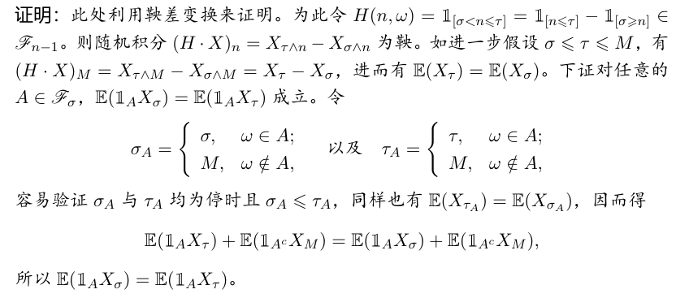
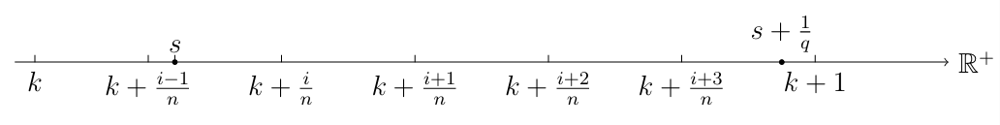
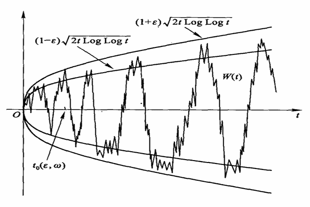

随机过程（二）
鞅
$(\Omega, \mathcal{F}, \mathbb{P})$ 是基本概率空间，$\{\mathcal{F}_n\}_{1}^{\infty} \subset \mathcal{F}$ 是一族上升的 $\sigma$ 代数流。称 $X = (X_n: n = 0,1,2,\dots)$ 是 $\mathcal{F}_n$ 鞅，如果满足：
(i) 对所有的 $n$, $\mathbb{E}(|X_n|) < \infty$;
(ii) 对所有的 $n$, $X_n$ 是 $\mathcal{F}_n$ 适应的，即 $X_n \in \mathcal{F}_n$;
(iii) 对所有的 $n$, $\mathbb{E}(X_{n+1} | \mathcal{F}_n) = X_n$。
鞅与信息流$\mathcal{F}_n$相关联，不加说明时指的自然$\sigma$代数流：$\mathcal{F}_n=\sigma(X_0,X_1,...,X_n)$
第三条的等价定义：$\mathbb{E}(X_{n} | \mathcal{F}_m) = X_m\quad(\forall m<n)$
$\mathbb{E}(X_{n+1} | \mathcal{F}_n) \le X_n$称为上鞅（期望不断减小）；$\mathbb{E}(X_{n+1} | \mathcal{F}_n) \ge X_n$称为下鞅（期望不断变大）
那我们验证一个序列是否为鞅，主要就是验证第三条，也就是我们要算$\mathbb{E}(X_{n+1} | \mathcal{F}_n)$最后往Xn上靠
例子
下面均假设自然$\sigma$代数流
0均值的和
设 $Y_0$ 为 $\mathcal{F}_0$ 可测, $\{Y_n\}_{1}^{\infty}$ 互相独立, $\mathbb{E}(|Y_n|) < \infty$, $\mathbb{E}(Y_n) = 0$。则
$$ S_n = \sum_{i=0}^n Y_i $$
是 $\mathcal{F}_n$ 鞅。
验证：$E(S_n+Y_{n+1})=S_n+E(Y_{n+1})=S_n$
平稳分布上的有界函数
$Y = (Y_n: n = 0,1,\dots)$ 为马链，$P$ 为转移矩阵。设 $f$ 为 $\mathcal{S}$ 上有界函数满足：
$$(Pf)(i) = \sum_{j\in\mathcal{S}} P_{ij} f(j) = f(i).$$
取 $X_n = f(Y_n)$。
马氏链上的特征函数
$Y$ 同上，$f$ 有界，满足
$$ (Pf)(i) = \sum_{j\in\mathcal{S}} P_{ij} f(j) = \lambda f(i). $$
取$X_n = \lambda^{-n} f(Y_n).$
均匀分布上的调和函数
设 $f$ 是某个 $d$ 维区域 $\mathbb{R}$ 内的上调和函数，即对任意的 $x \in \mathbb{R}$ 及任意的闭球 $B(x, r) = \{y: |y-x| \le r\}$，有均值性质
$$ f(x) \ge \frac{1}{|B(x, r)|} \int_{B(x, r)} f(y) dy, $$
其中 $|B(0, r)| = \frac{2\pi^{d/2}r^d}{d\Gamma(d/2)}$ 为半径为 $r$ 的球体体积。
再设 $\xi_1, \dots, \xi_n, \dots$ 为 $B(0,1)$ 上的 i.i.d. 均匀随机变量序列。对 $n \ge 1$，定义 $S_n = S_{n-1} + \xi_n$, $S_0 = x$, $X_n = f(S_n)$, $\mathcal{F}_n = \sigma(\xi_1, \dots, \xi_n)$。则
$$ \mathbb{E}(X_{n+1} | \mathcal{F}_n) = \mathbb{E}(f(S_{n+1}) | \mathcal{F}_n) = \mathbb{E}(f(S_n + \xi_{n+1}) | \mathcal{F}_n) $$
$$ = \mathbb{E}(f(z + \xi_{n+1})) |_{z=S_n} = \frac{1}{|B(0,1)|} \int_{B(0,1)} f(z + y) dy \big|_{z=S_n} $$
$$ = \frac{1}{|B(0,1)|} \int_{B(z,1)} f(y) dy \big|_{z=S_n} \le f(z) |_{z=S_n} = f(S_n) = X_n. $$
故 $X_n$ 为 $\mathcal{F}_n$ 上鞅。
注：这里的“上”调和函数和“上”鞅对应，如果条件是调和函数，那么所有不等号改为等号，Xn为鞅
调和函数有均值决定的性质，这恰好与均匀随机变量适配，从而变成鞅
如 $f$ 满足 $\Delta f = \left( \frac{\partial^2}{\partial x_1^2} + \dots + \frac{\partial^2}{\partial x_d^2} \right) f \le 0$，其它条件同上例，则 $X_n = f(S_n)$ 为上鞅。
分支过程
分支过程设 $Y_n$ 为一分支过程，其后代分布均值 $\mu < \infty$，令
$$ X_n = \mu^{-n} Y_n $$
则 $X_n$ 为鞅。
Wald鞅
$Y_0=0$，$Y_n$ 独立同分布，对某个 $\lambda \ne 0$，矩母函数 $\phi(\lambda)=\mathbb{E}(\exp[\lambda Y_k])$ 有限。则
$$ X_n=\phi(\lambda)^{-n}\exp\left[\lambda(Y_1+\cdots+Y_n)\right] $$
为鞅。
实际上，$f(y)=\exp[\lambda y]$ 是部分和 $S_n=Y_1+\cdots+Y_n$ 所对应转移矩阵的一个特征函数。设 $G(y)$ 为 $Y_n$ 的公共分布函数，则
$$ \mathbb{P}(S_{n+1}\le y\mid S_n=x)=\mathbb{P}(S_{n+1}-S_n\le y-x\mid S_n=x)=\mathbb{P}(Y_{n+1}\le y-x)=G(y-x). $$
因此
$$ \begin{aligned} \mathbb{E}(f(S_{n+1})\mid S_n=x) &=\int \exp[\lambda y]\,d_y G(y-x)\\ &=\exp[\lambda x]\int \exp[\lambda\xi]\,dG(\xi) =\exp[\lambda x]\phi(\lambda). \end{aligned} $$
每次转移会多一个$\phi(\lambda)$，所以作为鞅X要给他除掉
这样
$$ \mathbb{E}\left(\phi(\lambda)^{-(n+1)}f(S_{n+1})\mid S_n\right)=\phi(\lambda)^{-n}f(S_n). $$
所以 $X_n$ 为鞅。
Polya罐
设罐里有 $a$ 只红球，$b$ 只绿球。每次从罐中抽出一只球，然后把它和另外 $c$ 只相同颜色的一并放入罐中，试验重复进行下去。用 $X_n,Y_n$ 分别表示第 $n$ 步后红球所占比率和数目，则 $X_n$ 关于 $\mathcal{F}_n$ 是一个鞅。
也是只有两种情况的一个暴力的计算
如已知 $Y_n = k$，则
$$ Y_{n+1} = \begin{cases} k + c, & \text{以概率 } \dfrac{k}{a+b+nc}; \\[6pt] k, & \text{以概率 } 1 - \dfrac{k}{a+b+nc}. \end{cases} $$
因此，在 $Y_n = k$ 的条件下，$X_n = \dfrac{k}{a+b+nc}$，
$$ \begin{aligned} \mathbb{E}(X_{n+1} \mid Y_n = k) &= \frac{k+c}{a+b+(n+1)c} \times \frac{k}{a+b+nc} + \frac{k}{a+b+(n+1)c} \times \frac{a+b+nc-k}{a+b+nc} \\[6pt] &= \frac{k}{a+b+nc}, \end{aligned} $$
所以，$\mathbb{E}(X_{n+1} \mid Y_n) = \dfrac{Y_n}{a+b+nc} = X_n$。
Radon-Nikodym导数
(i) 拉东导数（Radon-Nikodym derivatives）设 $Z \sim U[0,1]$，给定 $n \in \mathbb{N}$ 定义
$$ Y_n = \frac{k}{2^n}, \quad \text{如果 } \frac{k}{2^n} \le Z < \frac{k+1}{2^n}, \quad k=0,1,\dots,2^n-1. $$
显然，随着 $n$ 的增加，$Y_1,Y_2,\dots,Y_n$ 越来越逼近 $Z$。令 $f$ 是 $[0,1)$ 上有界函数，构造差商
$$ X_n = 2^n \left[ f\left(Y_n + 2^{-n}\right) - f(Y_n) \right]. $$
可以看出这个的极限就是f在Z处的导数
则 $X_n$ 为关于 $Y_n$ 的鞅。实际上，在已知 $Y_0,Y_1,\dots,Y_n$ 的条件下，$Z$ 在 $[Y_n, Y_n + 2^{-n}]$ 上均匀分布，于是 $Y_{n+1}$ 以相等概率取 $Y_n$ 或 $Y_n + 2^{-(n+1)}$，因此
$$ \begin{aligned} \mathbb{E}(X_{n+1} \mid Y_0,\dots,Y_n) &= \mathbb{E}\left(2^{n+1}\left[ f(Y_{n+1}+2^{-(n+1)}) - f(Y_{n+1}) \right] \Big| Y_0,\dots,Y_n\right) \\ &= 2^{n+1}\left[ \frac{1}{2}\left(f(Y_n+2^{-(n+1)})-f(Y_n)\right) + \frac{1}{2}\left(f(Y_n+2^{-n})-f(Y_n+2^{-(n+1)})\right) \right] \\ &= X_n. \end{aligned} $$
鞅差变换
设 $Y_0,Y_1,\dots,Y_n,\dots$ 为随机过程，$X_n$ 为关于 $Y_n$ 的鞅。有时，我们也把由 $Y_0,Y_1,\dots,Y_n$ 生成的信息流记为 $\mathcal{F}_n$，此时我们也说 $X_n$ 为关于信息流 $\mathcal{F}_n$ 的鞅，即 $\mathbb{E}(X_{n+1}|\mathcal{F}_n)=X_n$。另外，还有过程 $H=\{H_n:n=0,1,2,\dots\}$，$H_n$ 由 $Y_0,Y_1,\dots,Y_{n-1}$ 决定，换句话说，$H_n$ 是 $\mathcal{F}_{n-1}$ 可测的。定义
$$ Z_0=0;\quad Z_n=Z_{n-1}+H_n(X_n-X_{n-1})=\sum_{k=1}^n H_k(X_k-X_{k-1}). $$
则 $Z_n$ 也是鞅。也称 $Z_n$ 为 $H_n$ 关于 $X_n$ 的随机积分，记为 $Z=H\cdot X$，即 $Z=\{Z_n=(H\cdot X)_n:n\ge0\}$。
比如：在第一个例子中取 $\mathbb{P}(Y_n=\pm1)=\frac{1}{2}$，则 $S_n$ 表示 $n$ 局所赢钱的数目，是一个鞅（公平赌博）。这时我们可以把 $S_n$ 看成 $H_n=1$ 关于 $S_n$ 的随机积分。
再如下定义 $H_n'$：
$$ H_1'=1,\quad H_n'= \begin{cases} 2H_{n-1}', & Y_{n-1}=-1;\\ 0, & \text{否则}. \end{cases} $$
那么，$H_n'$ 关于 $S_n$ 的随机积分 $S_n'=\sum_{k=1}^n H_k'(S_k-S_{k-1})=\sum_{k=1}^n H_k'Y_k$ 为鞅。假设赌博在第 $n+1$ 局结束时停止，则前 $n$ 局赌博的失去赌资为 $1+2+4+\dots+2^{n-1}=2^n-1$，第 $n+1$ 局赢得 $2\times2^{n-1}=2^n$，这样 $S_{n+1}=1$。
在可选停时定理中还会作为例子出现，这里的S不满足可选停时定理的期望归零条件
由于琴声不等式，鞅经过一个下凹函数后变为下鞅
$$\mathbb{E}\big(\phi(X_{n+1}) \,\big|\, \mathcal{F}_n\big) \;\ge\; \phi\big(\mathbb{E}(X_{n+1} \,|\, \mathcal{F}_n)\big) \;=\; \phi(X_n).$$
可选停时定理
对于鞅而言，给定n，则有$E(X_n)=E(X_0)$。在满足某些条件时可以将这条性质推广到停时上
停时
随机时间 $\tau$ 是停时，如果对任意的 $n \in \mathbb{N}_0$，事件 $\{\tau = n\}$ 的发生与否由 $\mathcal{F}_n$ 来决定，换句话说，$\{\tau = n\} \in \mathcal{F}_n$（或者 $\{\tau \le n\} \in \mathcal{F}_n$）。
由于 $\tau$ 可以取 $\infty$，我们探讨 $\mathbb{E}(X_0) = \mathbb{E}(X_{\tau \wedge n})$ 是否成立。
设 $X$ 为 $\mathcal{F}_n$ 鞅（上鞅、下鞅），停止过程 $X^\tau = \{X_{\tau \wedge n}: n = 0,1,\dots\}$ 是鞅（上鞅、下鞅）。
也就是人为多规定了一个停止时间τ
证明：验证鞅的期望不变的性质，将X分为停止前和停止后两部分
$$ \begin{aligned} \mathbb{E}(X_{\tau \wedge (n+1)} | \mathcal{F}_n) &= \sum_{k=0}^\infty \mathbb{E}(X_{\tau \wedge (n+1)} 1_{\tau=k} | \mathcal{F}_n) \\ &= \sum_{k=0}^n X_k 1_{\tau=k} + \sum_{k=n+1}^\infty \mathbb{E}(X_{\tau \wedge (n+1)} 1_{\tau=k} | \mathcal{F}_n) \\ &= \sum_{k=0}^n X_k 1_{\tau=k} + \sum_{k=n+1}^\infty \mathbb{E}(X_{n+1} 1_{\tau=k} | \mathcal{F}_n) \\ &= \sum_{k=0}^n X_k 1_{\tau=k} + \mathbb{E}\left(X_{n+1} \sum_{k=n+1}^\infty 1_{\tau=k} \,\Big|\, \mathcal{F}_n\right) \\ &= \sum_{k=0}^n X_k 1_{\tau=k} + \mathbb{E}(X_{n+1} 1_{\tau \ge (n+1)} | \mathcal{F}_n) \\ &= \sum_{k=0}^n X_k 1_{\tau=k} + \mathbb{E}(X_{n+1} (1 - 1_{\tau \le n}) | \mathcal{F}_n) \\ &= \sum_{k=0}^n X_k 1_{\tau=k} + (1 - 1_{\tau \le n}) \mathbb{E}(X_{n+1} | \mathcal{F}_n) \\ &= \sum_{k=0}^n X_k 1_{\tau=k} + (1 - 1_{\tau \le n}) X_n \\ &= X_\tau 1_{\tau \le n} + (1 - 1_{\tau \le n}) X_n = X_{\tau \wedge n}. \end{aligned} $$
所以 $X^\tau$ 是鞅，对上鞅、下鞅情形证明一样。
补充：测度的一致连续
$$\int|f(w)|\mu(dw)<\infty$$
令
$$\nu(A)=\int_Af(w)\mu(dw)$$
则($\varepsilon-\delta$语言)对$\forall\varepsilon>0,\exists\delta$使得当$\mu(A)<\delta$有$\nu(A)<\varepsilon$
这也就是这两个测度之间的绝对连续，记作$\nu<<\mu$
下面探讨无界停时是否还有期望不变的性质
定理
（可选停止定理）设 $\tau$ 为有限停时，$X_n$ 为鞅，满足：
(i) $\mathbb{E}|X_\tau| < \infty$；
**(ii)** $\lim_{n\to\infty} \mathbb{E}(X_n 1_{\tau>n}) = 0$，
则 $\mathbb{E}(X_\tau) = \mathbb{E}(X_0)$。
证明：
$$ \begin{aligned} \mathbb{E}(X_\tau) &= \mathbb{E}(X_\tau 1_{\tau>n}) + \mathbb{E}(X_\tau 1_{\tau\le n}) \\ &= \mathbb{E}(X_\tau 1_{\tau>n}) + \mathbb{E}(X_{\tau\wedge n}) - \mathbb{E}(X_n 1_{\tau>n}) \\ &= I + II + III = \mathbb{E}(X_0). \end{aligned} $$
由前面的停止过程性质知 $II = \mathbb{E}(X_0)$；又因为 $\mathbb{P}(\tau<\infty)=1$，所以 $\lim_{n\to\infty}\mathbb{P}(\tau>n)=0$，结合条件 (i) 知 $\lim_{n\to\infty}\mathbb{E}(X_\tau 1_{\tau>n})=0$；利用条件 (ii) 即得所要结论。
注：主要就是验证条件2，一个反例就是前面提过的鞅差变换例子，或者说倍赌策略的赌博停止时间（最终手上持有1元）作为停时（单次赌博输赢概率皆为50%，下一期赌金翻倍：1,2,4,8,...）
下面计算在n之后读博停止时所持资金的期望。
前n局都不赢钱，概率$P(\tau>n)=2^{-n}$
前n局都输了钱，越输越大，资金$X_n=-1-2-4-8-...=1-2^{n+1}$
故要求的期望$E(X_n1_{\tau>n})=(1-2^{n+1})(2^{-n})=-2+2^{-n}$，不收敛到0
为什么呢，因为$E(X_\tau)=1$，如果从0元起家，$E(X_0)=0$，结论不成立
总的来说，如果τ前的过程无法控制，就像这里会指数增长下降一样，那么(ii)条件不好满足
更好的定理条件：一致可积性
例
设 $Y_0 = 0, Y_1, Y_2, \dots, i.i.d, \mathbb{E}(Y_k) = \mu, Var(Y_k) = \sigma^2 < \infty$。令 $X_n = S_n - n\mu = \sum_{k=1}^n Y_k - n\mu$。设 $\tau$ 为停时，且 $\mathbb{E}(\tau) < \infty$。则
$$\mathbb{E}(|X_{\tau}|) < \infty, \quad \mathbb{E}(X_{\tau}) = \mathbb{E}(S_{\tau}) - \mu\mathbb{E}(\tau) = 0.$$
令 $Y_k' = Y_k - \mu, X_n = \sum_{k=1}^n Y_k'$。则
$$\begin{aligned} \mathbb{E}|X_{\tau}| & \leqslant \mathbb{E}(\sum_{k=1}^{\tau} |Y_k'|) \\ & = \mathbb{E}(\sum_{n=1}^{\infty} \sum_{k=1}^n |Y_k'| 1_{\{\tau=n\}}) = \mathbb{E}(\sum_{k=1}^{\infty} |Y_k'| 1_{\{\tau \geqslant k\}}) \\ & = \mathbb{E}(\sum_{k=1}^{\infty} |Y_k'| 1_{\{\tau > k-1\}}) = \sum_{k=1}^{\infty} \mathbb{E}(\mathbb{E}(|Y_k'| 1_{\{\tau > k-1\}} | \mathscr{F}_{k-1})) \\ & = \mathbb{E}(\sum_{k=1}^{\infty} 1_{\{\tau > k-1\}} \mathbb{E}(|Y_k'| | \mathscr{F}_{k-1})) = \mathbb{E}(\sum_{k=1}^{\infty} 1_{\{\tau > k-1\}} \mathbb{E}(|Y_k'|)) \\ & = \mathbb{E}(\sum_{k=1}^{\infty} 1_{\{\tau > k-1\}} \mathbb{E}(|Y_1'|)) = \mathbb{E}(|Y_1'|) \mathbb{E}(\sum_{k=1}^{\infty} 1_{\{\tau > k-1\}}) \\ & = \mathbb{E}(|Y_1'|) \mathbb{E}(\tau) < \infty \end{aligned}$$
另外，我们有
$$(\mathbb{E}(X_n 1_{\{\tau > n\}}))^2 \leqslant \mathbb{E}(X_n^2) \mathbb{E}(1_{\{\tau > n\}}) \leqslant n \sigma^2 \mathbb{P}(\tau \geqslant n) \to 0.$$
因此结论成立。
注：知道$E(\tau)$不发散证明$nP(\tau\ge n)$在n趋于无穷时收敛到0
已知
$$E(\tau)=\int_0^\infty P(\tau>x) dx<+\infty$$
反常积分收敛说明尾部收敛
$$\int_z^{2z}P(\tau>x)dx\ge\int_z^{2z}P(\tau>2z)dx=\frac{1}{2}·2zP(\tau>2z)$$
最左端收敛到0，因此(经过一个小的变量代换后)$zP(\tau\ge z)\to0$
一维随机游走
(i) 首先我们反方向看看可选停止定理不成立的例子，比如向左向右概率均为1/2（我们知道此链常返但不正常返）
用S表示马氏链，选择到达1处作为停时$\tau=\inf\{n\ge1:S_n=1\}$，由于常返可知$P(\tau<\infty)=1$
但是停时的概率不等于0处概率，$1=E(S_\tau)\neq E(S_0)=0$，倒推出$E(\tau)=\infty$
(ii)继续考虑两侧对称1/2概率的情况，现在我们将停时选为超过(-a,b)这个区间的时间，$\tau=\inf\{n\ge1|S_n=-a~or~b\}$，ab为正整数
$$ \tau_{-a} = \inf\{n \ge 1 : S_n = -a\},\quad \tau_b = \inf\{n \ge 1 : S_n = b\}, $$
令 $\tau = \tau_{-a} \wedge \tau_b$。显然 $S_{\tau \wedge n}$ 有界，因此
$$ \left|\mathbb{E}(S_n 1_{\{\tau>n\}})\right| \le (a \vee b)\, \mathbb{P}(\tau>n) \xrightarrow[n\to\infty]{} 0, $$
满足可选停止定理的条件，于是
$$ \begin{aligned} 0 = \mathbb{E}(S_\tau) &= -a \cdot \mathbb{P}(\tau_{-a} < \tau_b) + b \cdot \mathbb{P}(\tau_{-a} > \tau_b) \\ &= -a \cdot \mathbb{P}(\tau_{-a} < \tau_b) + b \cdot \bigl(1 - \mathbb{P}(\tau_{-a} < \tau_b)\bigr). \end{aligned} $$
整理后得到
$$ \mathbb{P}(\tau_{-a} < \tau_b) = \frac{b}{a+b}. $$
下面计算 $\mathbb{E}(\tau)$。为此令 $Z_n = S_n^2 - n$，则 $Z_n$ 也是鞅，考虑鞅 $Z_{\tau\wedge n}$。则
$$ 0 = \mathbb{E}(Z_{\tau\wedge n}) = \mathbb{E}(S_{\tau\wedge n}^2 - \tau\wedge n). $$
令 $n \to \infty$ 由控制收敛定理及单调收敛定理得
$$ \mathbb{E}(S_\tau^2) = \mathbb{E}(\tau), $$
进而得 $\mathbb{E}(\tau) = \mathbb{E}(S_\tau^2) = a^2 \times \mathbb{P}(\tau_{-a} < \tau_b) + b^2(1 - \mathbb{P}(\tau_{-a} < \tau_b)) = ab$.
这是很符合直觉的，范围越大，跃出所需的时间更长
思考：如何计算 $\tau$ 的更高阶矩？答：我们必须使用不同的随机变量和鞅，例如拉普拉斯变换后的随机变量$E(e^{\lambda\tau})$之类的
(iii)对于不对称的随机游走p>q，也可以计算上一种情况所定义的超出ab范围的停时期望，过程略
$$\mathbb{E}(\tau)=\frac{a q^{a+b}+b p^{a+b}-(a+b) q^{a} p^{b}}{\left(p^{a+b}-q^{a+b}\right)(p-q)}.$$
截口定理
$X_m$是鞅等价于：如果两个停时$\tau$和$\sigma$可比较（有明确的先后关系）则$E(X_\tau)=E(X_\sigma)$
严格表述
设 $X=\{X_n:n\in\mathbb{N}\}$ 是 $\mathcal{F}_n$ 鞅（上鞅、下鞅），$\sigma$ 及 $\tau$ 是两个有界停时且满足 $\sigma\le\tau$。则
$$ \mathbb{E}(X_\tau\mid\mathcal{F}_\sigma)=X_\sigma\quad (\text{相应的 } \le, \ge)\ \text{a.s.} $$
只写了充分性，还有必要性
证明的过程中可以发现, 如果对任意的有界停时对 $\sigma \le \tau$, 对可积过程 $X$ 均有 $\mathbb{E}(X_\sigma) = \mathbb{E}(X_\tau)$, 则 $X$ 为鞅。

讨钱西格玛代数
其实是$\tau$前$\sigma$代数
$$\mathcal{F}_\tau = \{A \in \mathcal{F} : \forall t \in [0,\infty),\, A \cap \{\tau \le t\} \in \mathcal{F}_t\}$$
显然，$\mathcal{F}_\tau$ 是 $\mathcal{F}$ 的一个子 $\sigma$ 代数，且当 $\tau \equiv t$ 时，$\mathcal{F}_\tau = \mathcal{F}_t$。直观上，$\mathcal{F}_\tau$ 是由时刻 $\tau$ 之前的随机变量以及 $\tau$ 本身所产生的信息。$\tau$ 前 $\sigma$ 代数有以下基本性质。
设 $\tau,\sigma$ 为两个停时，$X$ 是可积随机变量。则
- $\mathbb{E}(\mathbf{1}_{[\sigma>\tau]} X \mid \mathcal{F}_\tau) = \mathbf{1}_{[\sigma>\tau]} \mathbb{E}(X \mid \mathcal{F}_{\sigma\wedge\tau})$；
- $\mathbb{E}(\mathbf{1}_{[\sigma\ge\tau]} X \mid \mathcal{F}_\tau) = \mathbf{1}_{[\sigma\ge\tau]} \mathbb{E}(X \mid \mathcal{F}_{\sigma\wedge\tau})$；
- $\mathbb{E}\big(\mathbb{E}(X \mid \mathcal{F}_\tau) \mid \mathcal{F}_\sigma\big) = \mathbb{E}(X \mid \mathcal{F}_{\sigma\wedge\tau})$。
#### 极大值不等式
探讨下鞅的上界
设 $X_n$ 为下鞅，记 $X_n^* = \max_{\{0\le k\le n\}} X_k,\ \lambda>0$. 则
(1) $\lambda\mathbb{P}(X_n^* \ge \lambda) \le \mathbb{E}(X_n 1_{\{X_n^* \ge \lambda\}}) \le \mathbb{E}(X_n^+) \le \mathbb{E}|X_n|$;
(2) $\lambda\mathbb{P}(\min_{0\le k\le n} X_k \le -\lambda) \le -\mathbb{E}(X_0) + \mathbb{E}(X_n 1_{\min_{0\le k\le n} X_n \ge -\lambda}) \le X_n^+ - \mathbb{E}(X_0) \le \mathbb{E}|X_0| + \mathbb{E}|X_n|$;
(3) $\lambda\mathbb{P}(\max_{0\le k\le n} |X_k| \ge \lambda) \le 2\mathbb{E}(X_n^+) - \mathbb{E}(X_0) \le 2\mathbb{E}|X_n| + \mathbb{E}|X_0|$.
推论(Kolmogorov 不等式) 设 $(X_n)$ 为鞅，且平方可积。则对任意的 $n$ 有
$$ \mathbb{P}\left[\max_{\{0\le k\le n\}} |X_k| \ge \lambda\right] \le \mathbb{E}|X_n|^2/\lambda^2. $$
证明：$X_n$ 是鞅，$|X_n|^2$ 是下鞅。
现设 $\xi_n$ i.i.d.，均值为 $0$，方差为 $\sigma^2$。令 $X_n = \sum_{k}^n \xi_k$。由以上推论我们有
$$ \mathbb{P}\left(\max_{\{0\le k\le n\}} X_k \ge \lambda\right) \le n\sigma^2\lambda^{-2}. $$
这就是经典的 Komogorov 不等式 (1929)。
定理 设 $X_n$ 为非负下鞅，仍然设 $X_n^* = \max_{\{0\le k\le n\}} X_k$. 则
$$ \mathbb{E}\left((X_n^*)^p\right) \le q^p\mathbb{E}(X_n^p), \quad \text{for } p > 1; $$
以及
$$ \mathbb{E}(X_n^*) \le \frac{\mathbf{e}}{\mathbf{e}-1}\left[1 + \mathbb{E}(X_n \log^+ X_n)\right]. $$
其中 $q$ 为 $p$ 的共轭指数.
这个定理告诉我们Lp范数$(E(X^p))^{1/p}$和由极大值给出的Lp番薯$(E((X^*)^p))^{1/p}$等价（另一个方向上的控制是显然的）
证明:
$$ \begin{align} \mathbb{E}(X_n^{*p}) &= \mathbb{E}\int_0^{X_n^*} px^{p-1}\mathrm{d}x = \mathbb{E}\int_0^\infty 1_{X_n^*\ge x} px^{p-1}\mathrm{d}x \\ &= \int_0^\infty \mathbb{P}(X_n^* \ge x) px^{p-1}\mathrm{d}x \le p\mathbb{E}(X_n)\int_0^{X_n^*} x^{p-2}\mathrm{d}x) \tag{7.11} \\ &= \frac{p}{p-1}\mathbb{E}(X_n X_n^{*(p-1)}) \le \frac{p}{p-1}\left[\mathbb{E}(X_n^p)\right]^{1/p}\left[\mathbb{E}(X_n^{*p})\right]^{1/q}. \end{align} $$
两边同除以 $[\mathbb{E}(X_n^{*p})]^{1/q}$ 即得结论 (如果除式为 0, 结果显然成立)。第二个不等式自己证明。
上述不等式对无穷情形也是成立的。
鞅收敛定理
本节考虑鞅的收敛理论。设 $(X_n)_{0\le n\le N}$ 为非负下鞅（$N$ 固定有限）。我们估计 $X_n$ 在区间 $(a,b)$ 的上穿（下穿）次数。由于 $(X_n - a)^+$ 也为下鞅，故令 $a=0$，所以我们只考虑非负下鞅。为此
$$ \begin{aligned} S_1 &= \min\{n \ge 0 : X_n = 0\}, \\ T_1 &= \min\{n \ge S_1 : X_n \ge b\}, \\ &\vdots \\ S_k &= \min\{n \ge T_{k-1}, X_n = 0\}, \\ T_k &= \min\{n \ge S_k, X_n \ge b\}. \end{aligned} $$
定义 $\min\{\} = N$，则如果鞅上穿区间 $[0,b]$ 的次数 $U_0^b(X,N)=j>0$，我们有
$$ (X_{T_1} - X_{S_1}) + \cdots + (X_{T_j} - X_{S_j}) \ge jb. \tag{7.12} $$
因为 $X_n$ 为下鞅，且 $S_k, T_k$ 均为有界停时，使用可选停时定理有
$$ \mathbb{E}(X_0) \le \mathbb{E}(X_{S_1}), \mathbb{E}(X_{T_1}) \le \mathbb{E}(X_{S_2}), \dots, \mathbb{E}(X_{T_{j-1}}) \le \mathbb{E}(X_{S_j}), \mathbb{E}X_{T_j} \le \mathbb{E}(X_N). $$
将(7.12)取期望并和上式相加即得
$$ \mathbb{E}(X_N) - \mathbb{E}(X_0) \ge \mathbb{E}(U_0^b(X,N))b. \tag{7.13} $$
式中的$U_0^b(X,N)$是指在0到N步之内的上穿b次数
上穿不等式
设 $(X_n)_{0\le n\le N}$ 为下鞅, $U_a^b(X,N)$ 为上穿 $[a,b]$ 次数, 即 $(X_n - a)^+$ 上穿 $[0,b-a]$ 的次数。则
$$ \mathbb{E}(U_a^b(X,N)) \le \frac{1}{(b-a)}\left[\mathbb{E}(X_N - a)^+ - \mathbb{E}(X_0 - a)^+\right] \le \frac{1}{b-a}\left[\mathbb{E}X_N^+ + |a|\right]. $$
Fatou引理：$f_k$是非负函数，则
$$\int\liminf_{n\to\infty} f_nd\mu\le\liminf_{n\to\infty}\int f_nd\mu$$
（类似于单调有界性原理） 设 $X_n$ 为下鞅，$\sup_n \mathbb{E}X_n^+ < \infty \iff \sup_n \mathbb{E}|X_n| < \infty$，则存在 $X_\infty \in \mathcal{F}_\infty$ 使得 $X_n \to X_\infty$ a.s. 以及 $\mathbb{E}(|X_\infty|) < \infty$.
证明: "$\iff$" 成立是因为 $\mathbb{E}|X_n| = 2\mathbb{E}X_n^+ - \mathbb{E}X_n \le 2\mathbb{E}X_n^+ - \mathbb{E}X_1$。因此使用 Fatou 引理，便有
$$ \mathbb{E}|X_\infty| \le \varliminf_{n\to\infty} \mathbb{E}|X_n| = \sup_n \mathbb{E}|X_n| < \infty. $$
定理. 设 $X_n$ 为非负上鞅，则当 $n \to \infty$ 时，$X_n \to X_\infty$ a.s.，且 $\mathbb{E}X_\infty \le \mathbb{E}X_0$.
Beta 分布在参数估计里使用广泛。设 $Y_1,Y_2,\dots$ i.i.d, 且 $\mathbb{P}(Y_1 = 1) = 1 - \mathbb{P}(Y_1 = 0) = \theta$，假设对 $\theta$ 没有任何先验信息，我们可以假设 $\theta \sim U(0,1)$。对固定的 $\theta$,
$$ \mathbb{P}(Y_1 + Y_2 + \dots + Y_n = k) = \binom{n}{k}\theta^k(1-\theta)^{n-k}. $$
令 $f_n(\theta|k)$ 表示给定 $Y_1 + \dots + Y_n = k$ 时 $\theta$ 的后验分布密度，则由 Bayes 定理可得
$$ f_n(\theta|k) = \frac{\binom{n}{k}\theta^k(1-\theta)^{n-k}}{\int_0^1 \binom{n}{k}\theta^k(1-\theta)^{n-k}\mathrm{d}\theta} = \frac{(n+1)!}{k!(n-k)!}\theta^k(1-\theta)^{n-k}. $$
此恰为参数分别为 $k+1$ 及 $n-k+1$ 的 Beta 分布。
鞅收敛定理条件不能保证L1收敛
一致可积性
设随机变量族 $X_\gamma, \gamma \in \Gamma$ 称为满足一致可积性，如果
$$ \lim_{M\to\infty} \sup_{\gamma\in\Gamma} \mathbb{E}\left[ |X_\gamma| \mathbf{1}_{\{|X_\gamma|>M\}} \right]=0 $$
一致可积性有很多很好的性质但是因为太难所以略
Doob-Meyer 分解
鞅的要求是期望值稳定，但是如果期望值稳增或者稳减呢，那我们自然的想法是把随机变量分解为鞅（稳定部分）+增加/减少部分
任何 $\mathcal{F}_n$ 下鞅 $X_n$ 可以唯一地表示成 $X_n = M_n + A_n, n \in \mathbb{N}_0$，其中 $M_n$ 为 $\mathcal{F}_n$ 鞅，$M_0 = X_0$，$A_n \in \mathcal{F}_{n-1}$ 为增过程（$A_n \le A_{n+1}$）且 $A_0 = 0$。在此意义下分解是唯一的。
证明：因为是下鞅，在期望的意义下每一步均有增量，因此把每一步增量的条件期望累加即得增过程。故令
$$ A_0 = 0,\ A_n = A_{n-1} + \mathbb{E}(X_n - X_{n-1}|\mathcal{F}_{n-1}),\quad n \ge 1 \tag{0.14} $$
显然 $A_n \in \mathcal{F}_{n-1}$ 且关于 $n$ 单调增。再令
$$ \begin{align} M_n &= X_n - A_n = X_0 + \sum_{k=1}^n (X_k - X_{k-1}) - \sum_{k=1}^n \mathbb{E}(X_k - X_{k-1}|\mathcal{F}_{k-1}) \\ &= X_0 + \sum_{k=0}^n (X_k - \mathbb{E}(X_k|\mathcal{F}_{k-1})). \tag{0.15} \end{align} $$
故
$$ \mathbb{E}(M_{n+1} - M_n|\mathcal{F}_n) = \mathbb{E}(X_{n+1} - \mathbb{E}(X_{n+1}|\mathcal{F}_n)|\mathcal{F}_n) = 0, $$
$M_n$ 为鞅。
设 $X_n$ 为 $\mathcal{F}_n$ 平方可积鞅，即对所有的 $n \in \mathbb{N}_0$，$\mathbb{E}(X_n^2) < \infty$。用 $\langle X \rangle_n$ 表示其 Doob-Meyer 分解可料增过程，称之为鞅 $X$ 的二次（平方）变差。即 $X_n^2 = M_n + \langle X \rangle_n$，换句话讲 $X_n^2 - \langle X \rangle_n$ 为鞅，因此也称 $\langle X \rangle$ 为 $X$ 的补偿。由分解的唯一性知 $\langle X \rangle_n$ 是一个使 $X_n^2 - \langle X \rangle_n$ 为鞅的可料增过程。再由 $X$ 的鞅性，可以得到
$$ \langle X \rangle_n = \sum_{k=1}^n \mathbb{E}(X_k^2 - X_{k-1}^2|\mathcal{F}_{k-1}) = \sum_{k=1}^n \mathbb{E}((X_k - X_{k-1})^2|\mathcal{F}_{k-1}). $$
进一步，当 $X_n = X_0 + \sum_{k=1}^n \xi_k,\ \{\xi_i\}_{i=1}^\infty$ 独立且均值为 $0$，则
$$ \langle X \rangle_n = \sum_{k=1}^n \mathrm{Var}(\xi_k) = \mathrm{Var}(X_n). $$
因此二次变差类似方差。
例：考虑随机游走绝对值的分解
从 0 点出发的对称随机游动 $S_n = \sum_{k=1}^n \xi_k$, $\mathbb{P}(\xi_k = \pm 1) = \frac{1}{2}$ 互相独立，此时令 $X_n = |S_n|$ 也是下鞅，其 Doob-Meyer 分解比 $S_n^2$ 的分解要稍微复杂一些。我们需要计算 $\mathbb{E}(|S_k||\mathcal{F}_{k-1})$。注意到
$$ |S_k| = |S_{k-1} + \xi_k| = \mathbb{1}_{\{S_{k-1}>0\}}(S_{k-1} + \xi_k) + \mathbb{1}_{\{S_{k-1}=0\}} - \mathbb{1}_{\{S_{k-1}<0\}}(S_{k-1} + \xi_k), $$
以及 $S_{k-1} \in \mathcal{F}_{k-1}$、$\xi_k$ 与 $\mathcal{F}_{k-1}$ 独立且期望为 0，可知
$$ \mathbb{E}(|S_k||\mathcal{F}_{k-1}) = \mathbb{1}_{\{S_{k-1}>0\}}S_{k-1} + \mathbb{1}_{\{S_{k-1}=0\}} - \mathbb{1}_{\{S_{k-1}<0\}}S_{k-1}. $$
这样有
$$ A_n = \sum_{k=1}^n \mathbb{E}(|S_k| - |S_{k-1}||\mathcal{F}_{k-1}) = \sum_{k=1}^n \mathbb{1}_{\{S_{k-1}=0\}}, $$
其值表示随机游动在时刻n之前访问 0 的次数，我们称之为 0 点的局部时 (local time)，用 $L_n(0)$ 表示。另外
$$ M_n = \sum_{k=1}^n (|S_k| - \mathbb{E}(|S_k||\mathcal{F}_{k-1})) = \sum_{k=1}^n (\mathbb{1}_{\{S_{k-1}>0\}}\xi_k - \mathbb{1}_{\{S_{k-1}<0\}}\xi_k). $$
我们引入符号函数
$$ \mathrm{sgn}(x) = \begin{cases} 1, & x > 0; \\ 0, & x = 0; \\ -1, & x < 0. \end{cases} $$
则 $M_n$ 可表示成
$$ M_n = \sum_{k=1}^n \mathrm{sgn}(S_{k-1})\xi_k = \sum_{k=1}^n \mathrm{sgn}(S_{k-1})(S_k - S_{k-1}). $$
注意到 $\mathrm{sgn}(S_{k-1}) \in \mathcal{F}_{k-1}$，所以 $M_n$ 是可料过程 $H_n = \mathrm{sgn}(S_{n-1}), n=1,2,\dots$，关于鞅序列 $S_n$ 的鞅变换为鞅。所以
$$ |S_n| = \sum_{k=0}^n \mathrm{sgn}(S_{k-1})(S_k - S_{k-1}) + L_n(0), $$
随机游走的绝对值分解为带符号的每步和+0点局部时
此式即为 Brown 运动局部时公式的离散版本。
布朗运动
定义
连续随机过程 $B = \{B(t), t \ge 0\}$ 称作 Weiner 过程或者 Brown 运动，如果满足：
- $B(0) = 0$;
- 在不相交的时间区间上的增量独立；
- 对所有的 $0 \le s < t < \infty$, 随机变量 $B(t) - B(s) \sim \mathrm{N}(0, t-s)$.
由定义我们知
$$ \mathbb{E}(B(t)) = 0, \quad \mathbb{E}(B(t)B(s)) = s \wedge t, \quad \forall t, s \in [0, \infty). $$
（协方差是两个时间取小。你也可以更改这里协方差的定义比如改为另一个正定二元函数去创造别的类似于布朗运动的随机运动）
Brown运动定义等价与下面的：
i) $B = \{B(t): t \ge 0\}$ 是连续 Gauss 过程；
ii) $\mathbb{E}(B(t)) = 0$;
iii) $\mathbb{E}(B(t)B(s)) = s \wedge t$, 对一切 $s,t \in [0,\infty)$.
如下的变换仍然是布朗运动：
(i) $X(t) = -B(t)$ (对称性);
(ii) 对固定的 $t_0 > 0$, 过程 $X(t) = B(t_0 + t) - B(t_0), t \ge 0$ (平移不变性);
(iii) 设 $c > 0$, 过程 $X(t) = cB\left(\frac{t}{c^2}\right), t \ge 0$ (刻度不变性);
(iv) $X(t) = tB\left(\frac{1}{t}\right), t \ge 0$ (时间逆).
布朗运动的概率密度函数
$$g(t, x, y) = \frac{1}{\sqrt{2\pi t}} e^{-\frac{(y-x)^2}{2t}}$$
满足如下热传导方程
$$\frac{\partial u(t, x)}{\partial t} = \frac{1}{2} \frac{\partial^2 u(t, x)}{\partial x^2}$$
布朗运动的不连续性：
定理(Paley-Wiener-Zygmund) Brown 运动 $B = \{B(t), t \ge 0\}$ 的轨道以概率 1，在 $[0,\infty)$ 上，点点不可微。
证明：（依旧分析风味证明，可微那么导数两点间的变化由这两点距离控制，对满足要求的集合取极限，带入正态分布最终得到极限为0（可微点零测））
研究区间 $[k,k+1),k \in \{0,1,\dots\}$。设对 $\omega \in \Omega, B(\cdot,\omega)$ 可微，则在点 $s \in [k,k+1)$ 右可微，这样存在 $q,l \in \mathbb{N}(q = q(s,\omega), l = l(\omega,s,q(s,\omega)))$，使得对所有的 $t \in [s,s + q^{-1}) \subset [k,k+1)$ 有
$$ |B(t,\omega) - B(s,\omega)| \le l(t - s) \tag{8.2} $$
现对满足(8.2)的 $s$ 及 $\omega$，选 $n$ 足够大使得 $\frac{4}{n} < \frac{1}{q}$ 以及 $i = i(s,n)(i = 1,2,\dots,n)$，使得 $k + (i-1)/n \le s < k + i/n$，则对 $j = i+1,i+2,i+3$，我们有

$$ \begin{aligned} &\left|B\left(k+\frac{j}{n},\omega\right)-B\left(k+\frac{j-1}{n},\omega\right)\right| \\ \le &\left|B\left(k+\frac{j}{n},\omega\right)-B(s,\omega)\right|+\left|B(s,\omega)-B\left(k+\frac{j-1}{n},\omega\right)\right| \\ \le & l \cdot \frac{4}{n} + l \cdot \frac{3}{n} = \frac{7l}{n}. \end{aligned} $$
对 $l,n,i \in \mathbb{N}$(和固定的 $k$) 引入事件
$$ A_{l,n,i} = \left\{ \omega: \left|B\left(k+\frac{j}{n},\omega\right) - B\left(k+\frac{j-1}{n},\omega\right)\right| \le \frac{7l}{n},\text{当 } j=i+1,i+2,i+3 \right\}. $$
所以，如果对 $\omega$, (8.2)成立，则
$$ \omega \in \bigcap_{n>4q} \bigcup_{i=1}^n A_{l,n,i}. $$
令
$$ D_k = \left\{ \omega: B(\cdot,\omega) \text{在一点 } s \in [k,k+1) \text{上可微} \right\}, $$
则
$$ D_k \subset \bigcup_{q=1}^\infty \bigcup_{l=1}^\infty \bigcap_{n>4q} \bigcup_{i=1}^n A_{l,n,i}. \tag{8.3} $$
因为对任意的事件序列 $B_n \in \mathcal{F}, n \in \mathbb{N}$ 有
$$ \mathbb{P}\left( \bigcap_{n=1}^\infty B_n \right) \le \liminf_{n \to \infty} \mathbb{P}(B_n). $$
对每个 $q,l \in \mathbb{N}$, 由过程的独立增量性，得到
$$ \begin{aligned} \mathbb{P}\left( \bigcap_{n>4q} \bigcup_{i=1}^n A_{l,n,i} \right) &\le \liminf_{n \to \infty} \mathbb{P}\left( \bigcup_{i=1}^n A_{l,n,i} \right) \\ &\le \liminf_{n \to \infty} \sum_{i=1}^n \mathbb{P}(A_{l,n,i}) \\ &\le \liminf_{n \to \infty} n \left( \mathbb{P}\left( \left|B\left(\frac{1}{n}\right)\right| \le \frac{7l}{n} \right) \right)^3 \\ &= \liminf_{n \to \infty} n \left( \mathbb{P}\left( |B(1)| \le \frac{7l}{\sqrt{n}} \right) \right)^3 \\ &\le \liminf_{n \to \infty} n \left( \frac{1}{\sqrt{2\pi}} \cdot \frac{14l}{\sqrt{n}} \right)^3 = 0. \end{aligned} $$
这里我们利用了 $B(t) \sim \mathrm{N}(0,t)$, 以及
$$ \mathbb{P}(|B(1)| \le z) = \frac{1}{\sqrt{2\pi}} \int_{-z}^z e^{-\frac{x^2}{2}} \mathrm{d}x \le \frac{1}{\sqrt{2\pi}} 2z. $$
故$P(D_k)=0$
Kolmogorov 连续修正定理和布朗运动刻画
设随机过程 $X = \{X(t), 0 \le t \le T\}$，如果存在正常数 $\alpha, \beta, K$ 使得对所有的 $0 < s, t \le T$ 有
$$ \mathbb{E}|X_t - X_s|^\alpha \le K|t - s|^{1+\beta}, $$
则存在连续过程 $\tilde{X}$ 使得 $\mathbb{P}(X_t = \tilde{X}_t) = 1, \forall t \ge 0$。进一步，$\tilde{X}$ 局部 $\gamma$-Hölder 连续对一切 $0 < \gamma < \frac{\beta}{\alpha}$。
因为 $\mathbb{E}(B(t)-B(s))^{2n} = (2n-1)!! |t-s|^n$，取 $\alpha=2n, \beta=n-1$，由 Kolmogorov 连续修正定理知 Brown 运动有连续修正 $\tilde{B}$，我们仍用 $B$ 表示，且因为 $\frac{n-1}{2n} \to \frac{1}{2}$，故知 Brown 运动对一切 $0 < \gamma < \frac{1}{2}$ 有 $\gamma$-Hölder 连续性质。
注：这告诉我们布朗运动轨道连续性集中在$\frac{1}{2}^-$-Hölder 连续。可微性需要1--Hölder 连续，所以还差远了
这个定理告诉我们布朗运动在局部的性质
Brown 运动连续模 (modulus of continuity) 依概率 1 地，
$$ \lim_{h\to 0} \sup_{\{t,t'\le 1; |t-t'|\le h\}} \frac{|B(t)-B(t')|}{\sqrt{2h\log\left(\frac{1}{h}\right)}} = 1. $$
换句话，Brown 运动有连续模
$$ \omega(\delta) = \sqrt{-2\delta\log\delta}, $$
对任意充分小的 $\delta>0$.
因此 Brown 运动不可以是 $\frac{1}{2}$-Hölder 连续的。当然也不是有限变差的。
称 $\lim_{\|\Delta_n\| \to 0} \sum_{i=0}^{n-1} |X(t_{i+1}) - X(t_i)|^2$ 为过程 $X$（鞅、半鞅、马氏过程）的平方变差，如果极限存在的话，并记之为 $\langle X \rangle = \{\langle X \rangle_t, t \ge 0\}$。i.e.,
$$ \langle X \rangle_t = \lim \sum_{i=0}^{n-1} |X(t_{i+1}) - X(t_i)|^2, \quad L^2 \text{ 或者依概率.} $$
固定 $t>0$，考虑 $[0,t]$ 的一个分割 $\Delta^n: 0 = t_0 < t_1 < \dots < t_{n-1} < t_n = t$。令
$$ T^n = \sum_{i=0}^{n-1} |B(t_{i+1}) - B(t_i)|^2 \xrightarrow{\|\Delta^n\| \to 0} t, $$
in $L^2$.
布朗运动只存在平方变差，不是有限变差
这个定理告诉我们布朗运动在大范围的偏差趋势（按tloglogt发散）
(Brown 运动重对数律) 以概率 1 有
$$ \limsup_{t\to\infty} \frac{B(t)}{(2t\log\log t)^{1/2}} = 1 \quad \text{以及} \quad \liminf_{t\to\infty} \frac{B(t)}{(2t\log\log t)^{1/2}} = -1. $$

证明要用到
Borel-Cantelli 引理
事件序列概率和收敛则（这个串依次）发生无穷多次概率为0
事件序列独立且概率和发散则a.s.发生无穷次（例如猴子打字机哈姆雷特）
完整证明太过复杂所以略过
布朗运动强马氏性和反射
设 $B$ 是一维标准 Brown 运动，$\tau$ 为有限停时，令
$$ \tilde{B}(t) = 2B(t \wedge \tau) - B(t). $$
则 $\tilde{B} = \{\tilde{B}(t), t \ge 0\}$ 是 Brown 运动；且 $(\tilde{B}, \tau)$ 与 $(B, \tau)$ 同分布。
下面考虑布朗运动的首达某一点的时间分布。令 $S$ 为布朗运动的最大值过程，即 $S_t = \sup_{s\le t} B_s$，显然 $S_t\ge0$ 且关于时间 $t$ 单调不降。对任意的 $a\in\mathbb{R}_+$，令
$$ T_a = \inf\{t\ge 0,\, B_t=a\} = \inf\{t\ge 0,\, B_t\ge a\} = \inf\{t\ge 0,\, S_t\ge a\}. $$
**(布朗运动的反射原理)** 所有的假设如前，则
$$ \mathbb{P}(S_t\ge a) = \mathbb{P}(T_a\le t) = 2\mathbb{P}(B_t\ge a) = \mathbb{P}(|B_t|\ge a). $$
**证明：**
$$ \begin{aligned} \mathbb{P}(S_t\ge a) &= \mathbb{P}(S_t\ge a,\, B_t\ge a) + \mathbb{P}(S_t\ge a,\, B_t\le a) \\ &= \mathbb{P}(B_t\ge a) + \mathbb{P}(T_a\le t,\, B_t - B_{T_a}\le 0) \\ &= \mathbb{P}(B_t\ge a) + \mathbb{P}(T_a\le t,\, B_t - 2B_{T_a}\le -B_{T_a}) \\ &= \mathbb{P}(B_t\ge a) + \mathbb{P}(T_a\le t,\, B_t - 2B_{T_a}\le -a) \\ &= \mathbb{P}(B_t\ge a) + \mathbb{P}(T_a\le t,\, 2B_{T_a} - B_t\ge a) \\ &= \mathbb{P}(B_t\ge a) + \mathbb{P}(T_a\le t,\, \tilde{B}_t\ge a) \\ &= \mathbb{P}(B_t\ge a) + \mathbb{P}(T_a\le t,\, B_t\ge a) \\ &= 2\mathbb{P}(B_t\ge a) = \mathbb{P}(|B_t|\ge a). \end{aligned} $$
$\square$
由前知，
$$ \mathbb{P}(T_a\le t) = 2\int_a^\infty \frac{1}{\sqrt{2\pi t}} \mathrm e^{-\frac{x^2}{2t}} \mathrm{d}x. $$
两边微分及分布积分公式得 **$T_a$ 的密度函数**
$$\boxed{f_a(t) = \frac{a}{\sqrt{2\pi t^3}} \mathrm e^{-\frac{a^2}{2t}}}$$
进一步可证 $\mathbb{P}(T_a<\infty)=1$ 及 $\mathbb{E}(T_a)=\infty$。
命题 过程 $\{T_a, a \in \mathbb{R}\}$ 是左连续增过程，具有平稳独立增量，对几乎所有轨道，映射 $a \mapsto T_a$ 不连续。
这说明该过程是无限可分的，并且每一小段都相似，最后可以合成一个类似指数增长的东西
Brown 运动的反正弦律 给定 $t \ge 0$，令 $z_t = \max\{u \le t: B(u) = 0\}$ 表示 Brown 运动 $[0,t]$ 的最大零点。因为事件 $[z_t \ge s]$ 发生表明 Brown 运动在 $(s,t-s)$ 之间没有碰到 $0$ 点，通过在 $s$ 时刻取条件数学期望得
$$ \begin{aligned} \mathbb{P}_0(z_t \le s) &= \mathbb{E}_0\left(\mathbb{P}(z_t \le s \mid \mathcal{F}_s)\right) \\ &= \int_{-\infty}^{\infty} \frac{1}{\sqrt{2\pi s}} e^{-\frac{x^2}{2s}} \mathbb{P}(z_t \le s \mid B(s) = x) \mathrm{d}x \\ &= \int_{-\infty}^{\infty} \frac{1}{\sqrt{2\pi s}} e^{-\frac{x^2}{2s}} \mathbb{P}_x(T_0 > t-s) \mathrm{d}x \\ &= \int_{-\infty}^{\infty} \frac{1}{\sqrt{2\pi s}} e^{-\frac{x^2}{2s}} \mathbb{P}_0(T_{|x|} > t-s) \mathrm{d}x \quad (\text{对称性及增量的平稳性}) \\ &= 2 \int_{0}^{\infty} \frac{1}{\sqrt{2\pi s}} e^{-\frac{x^2}{2s}} \mathbb{P}_0(T_x > t-s) \mathrm{d}x \\ &= 2 \int_{0}^{\infty} \frac{1}{\sqrt{2\pi s}} e^{-\frac{x^2}{2s}} \int_{t-s}^{\infty} \frac{x}{\sqrt{2\pi r^3}} e^{-\frac{x^2}{2r}} \mathrm{d}r \mathrm{d}x. \end{aligned} $$
先对 $x$ 积分得
$$ \mathbb{P}_0(z_t \le s) = \frac{1}{\pi} \int_{t-s}^{\infty} \frac{1}{r+s} \sqrt{\frac{s}{r}} \mathrm{d}r \stackrel{sv=\frac{1}{r+s}}{=} \int_{0}^{\frac{s}{t}} \frac{1}{\sqrt{v}\sqrt{1-v}} \mathrm{d}v = \frac{2}{\pi} \arcsin\sqrt{\frac{s}{t}}. $$
一些莫名其妙的分析性质
我已经晕了
(i) Lebesgue 测度为 0；
(ii) 无界闭集；
(iii) $t=0$ 是聚点；
(iv) 在 $(0,\infty)$ 无孤立点；
(v) 是稠密集。
常返性
假设布朗运动从环状区域开始，我们计算它跑出环和跑进原点的概率
哥们没学过Ito公式啊
$$X(t) = \phi(B_t) = \phi(a) + \int_0^t \nabla \phi(B_s) \, dB_s + \frac{1}{2} \int_0^t \Delta \phi(B_s) \, ds = \phi(a) + \int_0^t \nabla \phi(B_s) \, dB_s$$
二维布朗运动以概率1进入原点任意小邻域
三维布朗运动以概率1离开任意有限区域
布朗桥
设 $B$ 为一维标准布朗运动，$T>0$ 固定。定义布朗桥过程
$$X(t) = B(t) - \frac{t}{T}B(T),\quad 0 \le t \le T$$
注 1.8.24.
i) $X(0) = X(T) = 0$，我们也记为 $X^{0\to0}$；
ii) $X^{0\to0}(t) \notin \mathscr{F}_t$ 是非适应过程，以后将用随机积分的形式来定义；
iii) 布朗桥是高斯过程，其期望和协方差分别为
$$ \mathbb{E}\big(X^{0\to0}(t)\big) = 0;\quad \mathbb{E}\big(X^{0\to0}(s)X^{0\to0}(t)\big) = s \wedge t - \frac{st}{T}; $$
iv) 对 $a,b\in\mathbb{R}$，定义从 $a$ 到 $b$ 的布朗桥
$$ X^{a\to b}(t) = a + \frac{b-a}{T}t + X^{0\to0}(t),\quad 0\le t\le T. $$
其均值与协方差分别为
$$m^{a\to b}(t) = a + \frac{b-a}{T}t;\quad C^{a\to b}(s,t) = s \wedge t - \frac{st}{T}.$$
布朗桥$X^{a\to b}$的有限维联合分布
实际上是布朗运动的条件分布，即有：
$$f_{X^{a\to b}}(x_1,\dots,x_n) = f_{W(t_1),\dots,W(t_n) \mid W(T)=b}(x_1,x_2,\dots,x_n).$$
随机积分
一般我们的积分大概就是$\int f(x) d\mu(x)$，一小段x通过定义好的测度，与f相乘，然后很多这样的微元求和，现在我们的随机积分是用随机过程定义这个测度，x有一种时间参数的感觉，此时的测度就变成了随机过程发生的位移
称过程 $h = \{h(t): 0 \le t \le T\}$ 为简单过程，如果它可表示成
$$ h(t,\omega) = \sum_{i=0}^{n-1} h_i(\omega) \mathbb{1}_{(t_i,t_{i+1}]}(t), $$
其中 $0 = t_0 < t_1 < \dots < t_n = T$ 是 $[0,T]$ 的一个划分，且 $h_i \in \mathscr{F}_{t_i}$ 且 $\mathbb{E}(h_i^2) < \infty$。用 $L_{0,T}^2$ 记 $[0,T]$ 上所有简单过程集合。
定义
$$ I_T(h)(\omega) \overset{\text{定义}}{=} \int_0^T h(t,\omega) \, dB(t) := \sum_{i=0}^{n-1} h_i(\omega)\big(B(t_{i+1}) - B(t_i)\big). \tag{9.1} $$
为简单过程 $h$ 关于 Brown 运动的随机积分。
对上面的积分直接求期望，由于dB是零期望的，所以得到一阶矩是0
二阶矩
$$ \begin{aligned} \mathbb{E}\big(I_T(h)\big)^2 &= \mathbb{E}\left( \sum_{i=0}^{n-1} h_i(\omega)\big(B(t_{i+1}) - B(t_i)\big) \right)^2 \\ &= \mathbb{E}\sum_{i=0}^{n-1} h_i^2(\omega)\big(B(t_{i+1}) - B(t_i)\big)^2\\ &+ \mathbb{E}\sum_{i\neq j} h_i(\omega)h_j(\omega)\big(B(t_{i+1})-B(t_i)\big)\big(B(t_{j+1})-B(t_j)\big) = I_1 + I_2. \end{aligned} $$
I1即为h的二阶矩，I2交叉项含有dB单次项所以是0
$$\mathbb{E}(I_T(h))^2 = \mathbb{E}\int_0^T h^2(t,\omega)\mathrm{d}t. \tag{9.2}$$
对于更高的矩：虽然布朗运动的任意矩都是可求的，但是h我们只要求存在平方矩，要求随即积分的高阶矩就需要h的高阶矩有定义
由此知积分 $I_T(h)$ 是一个平方可积随机变量，即 $I_T(h) \in L^2(\Omega)$（平方可积变量空间）。如果我们在 $L_{0,T}^2$ 中的元 $h$ 也定义一种范数
$$ \|h\|_T = \sqrt{\mathbb{E}\int_0^T h^2(t,\omega)\mathrm{d}t}, $$
这样通过随机积分算子 $I_T$ 建立了从 $L_{0,T}^2$ 到 $L^2(\Omega)$ 之间的一个等距同构。由于积分是线性的，所以它是一个线性等距同构，即
$$\|I_T(h)\|_2 = \|h\|_T.$$
用一列简单过程去逼近平方可积过程，就像我们在黎曼勒贝格积分中做的那样
对于任意的 $h \in L_T^2$，能找到一个简单过程列 $\{h_n\}_{n=1}^\infty$ 满足
$$ \|h_n - h\|_T^2 = \mathbb{E}\int_0^T |h_n(t,\omega) - h(t,\omega)|^2 \mathrm{d}t \to 0, $$
由等距性质(9.3)知，当 $n,m \to \infty$ 时
$$ \|I_T(h_m) - I_T(h_n)\|^2 = \|I_T(h_m - h_n)\|^2 = \mathbb{E}\int_0^T |h_m(s,\omega) - h_n(s,\omega)|^2 \mathrm{d}s \to 0. $$
由于 $L^2(\Omega)$ 是 Hilbert 空间，其 Cauchy 列存在唯一极限，此极限自然记为
$$ I_T(h) = \int_0^T h(s,\omega) \mathrm{d}B(t), $$
表示 $h$ 关于 Brown 运动 $B$ 的随机积分，也称为 Itô 积分，即
$$ I_T(h) = \lim_{n \to \infty} I_T(h_n), $$
且有
$$ \mathbb{E}\left(I_T^2(h)\right) = \mathbb{E}\int_0^T h^2(s,\omega) \mathrm{d}s. $$
Ito积分在简单过程中取的是每一段的左端点，还有一种取每一段中点的积分叫做S积分（Stratonovich integral）
计算布朗运动对布朗运动的随机积分，这里$B^{(n)}$是布朗运动的简单逼近
$$ \begin{aligned} & \int_{0}^{T} B^{(n)}(t) \mathrm{d}B(t) \\ &= \sum_{i=0}^{n-1} B(t_i)\big(B(t_{i+1}) - B(t_i)\big) \\ &= -\sum_{i=0}^{n-1} \big(B(t_{i+1}) - B(t_i)\big)^2 + \sum_{i=0}^{n-1} \big(B^2(t_{i+1}) - B^2(t_i)\big) - \sum_{i=0}^{n-1} B(t_i)\big(B(t_{i+1}) - B(t_i)\big). \end{aligned} $$
所以
$$ \int_{0}^{T} B^{(n)}(t) \mathrm{d}B(t) = \frac{1}{2}\sum_{i=0}^{n-1} \big(B^2(t_{i+1}) - B^2(t_i)\big) - \frac{1}{2}\sum_{i=0}^{n-1} \big(B(t_{i+1}) - B(t_i)\big)^2. $$
注意到 Brown 运动 $B$ 的平方变差 $\langle B\rangle_t = t$，对上式两边取极限便得
$$ \int_{0}^{T} B(t) \mathrm{d}B(t) = \frac{1}{2}B^2(T) - \frac{T}{2}. $$
前面$B^2/2$是很符合我们普通积分形式的，但是注意到这个后面有个$-T/2$，这是来源于$(dB)^2$这一项，与时间长度成正比，这是Ito积分独有的；如果我们改成S积分，那么积分会完美符合链式法则，只存在第一项
Ito积分的好处是随机积分仍然具有鞅性，这是因为$t_i$到$t_{i+1}$的随机变量是包含在$F_i$里的
随机积分作为随机变量
对于任意的 $h \in L_T^2$，积分过程 $(h \cdot B) = \left\{ \int_0^t h(s,\omega) \, dB(s): t \in [0,T] \right\}$ 为 0 初值 $\mathscr{F}_t$ 鞅，所以(h·B)^2是下鞅，经过Doob-Meyer分解后过程 $\left( \int_0^t h(s) \, dB(s) \right)^2 - \int_0^t h^2(s,\omega) \, ds$ 为 0 初值 $\mathscr{F}_t$ 鞅。
随机积分是鞅，这一点是很重要的性质，在下面我们经常化简出来随机积分的形式就可以说他是鞅了
Ito公式
考完期末之后去上课触发rgl特殊语音了
Ito公式也即随机积分的分部积分公式或微分链式法则
布朗运动情形
设 $f: \mathbb{R} \to \mathbb{R}$ 有二阶连续导数，$B = \{B(t): 0 \le t < \infty\}$ 为 $\mathscr{F}_t$ 适应布朗运动。则对一切 $0 < t < \infty$，有：
$$ f(B(t)) = f(B(0)) + \int_0^t f'(B(s))\mathrm{d}B(s) + \frac{1}{2}\int_0^t f''(B(s))\mathrm{d}s, \quad \mathbb{P}-\text{a.s.} $$
注：定理证明中收敛全是L2收敛。如果一列Xn同时依L2收敛到X和X'，那么X与X'之间至多只相差零测集，所以上面的等号是在最大相差零测集的前提下成立的
证明：思路是对f进行泰勒展开，一阶项是对布朗运动的随机积分，二阶项由于布朗运动的平方变差和时间同阶所以变成对时间的积分，高阶项含有时间差的一阶以上变差，他们的极限为0
对 $[0, t]$ 作分割 $\Pi: 0=t_{0}<t_{1}<\cdots<t_{n}=t$, 由 Taylor 公式
$$ \begin{aligned} f(B(t))-f(B(0)) &=\sum_{k=0}^{n-1}\left[f\left(B\left(t_{k+1}\right)\right)-f\left(B\left(t_{k}\right)\right)\right] \\ &=\sum_{k=0}^{n-1} f^{\prime}\left(B\left(t_{k}\right)\right)\left(B\left(t_{k+1}\right)-B\left(t_{k}\right)\right)+\frac{1}{2} \sum_{k=0}^{n-1} f^{\prime \prime}\left(\eta_{k}\right)\left(B\left(t_{k+1}\right)-B\left(t_{k}\right)\right)^{2} \\ &=J_{1}(\Pi)+J_{2}(\Pi), \end{aligned} $$
其中 $\eta_k(\omega) = B(t_k) + \theta_k(\omega)(B(t_{k+1}) - B(t_k))$ 满足 $0 \leqslant \theta_k(\omega) \leqslant 1$。显然过程
$f'(B) = \{f'(B(s)): 0 \leqslant s \leqslant t\} \in L_t^2$，由 Itô 积分的定义知在均方的意义下当
$\|\Pi\| = \max_{0 \leqslant k \leqslant n-1} |t_{k+1} - t_k| \to 0$ 时，
$$ J_1(\Pi) \longrightarrow \int_0^t f'(B(s))\mathrm{d}B(s). $$
第二步：平方项。为此令
$$ J_2^*(\Pi) = \frac{1}{2} \sum_{k=0}^{n-1} f''(B(t_k))(B(t_{k+1}) - B(t_k))^2. $$
则
$$ \mathbb{E}|J_2(\Pi) - J_2^*(\Pi)| \leqslant \sum_{k=0}^{n-1} \mathbb{E}\left\{|f''(\eta_k) - f''(B(t_k))|(B(t_{k+1}) - B(t_k))^2\right\} $$
利用 Schwarz 不等式得
$$ \begin{aligned} \mathbb{E}|J_2(\Pi) - J_2^*(\Pi)| &\leqslant \sum_{k=0}^{n-1} \sqrt{\mathbb{E}\left\{ \max_{0 \leqslant k \leqslant n-1} |f''(\eta_k) - f''(B(t_k))| \right\}^2} \sqrt{\mathbb{E}(B(t_{k+1}) - B(t_k))^4} \\ &= \sqrt{\mathbb{E}\left\{ \max_{0 \leqslant k \leqslant n-1} |f''(\eta_k) - f''(B(t_k))| \right\}^2} \sum_{k=0}^{n-1} \sqrt{\mathbb{E}(B(t_{k+1}) - B(t_k))^4} \\ &= \sqrt{3}t \sqrt{\mathbb{E}\left\{ \max_{0 \leqslant k \leqslant n-1} |f''(\eta_k) - f''(B(t_k))| \right\}^2}. \end{aligned} $$
由 $f''$ 的有界性及 Brown 运动的连续性，由控制收敛定理即得
$$ \mathbb{E}|J_2(\Pi) - J_2^*(\Pi)| \to 0. $$
显然
$$ J_2^{**}(\Pi) = \sum_{k=0}^{n-1} f''(B(t_k))(t_{k+1} - t_k) \to \int_0^t f''(B(s))\mathrm{d}s$$
a.s.成立。为了完成最后的证明只需估计
$$ \begin{aligned} \mathbb{E}\left|J_{2}^{*}(\Pi)-J_{2}^{* *}(\Pi)\right|^{2} &=\mathbb{E}\left|\sum_{k=0}^{n-1} f^{\prime \prime}\left(B\left(t_{k}\right)\right)\left[\left(B\left(t_{k+1}\right)-B\left(t_{k}\right)\right)^{2}-\left(t_{k+1}-t_{k}\right)\right]\right|^{2} \\ &=I_{1}+I_{2}, \end{aligned} $$
其中 $I_{2}$ 为交叉项, 由鞅性质为 0 。
$$ I_{1} \leqslant 8\left\|f^{\prime \prime}\right\|_{\infty}^{2} \sum_{k=0}^{n-1}\left(t_{k+1}-t_{k}\right)^{2} \to 0, $$
故 $J_{2}(\Pi) \to \frac{1}{2} \int_{0}^{t} f^{\prime \prime}(B(s)) \mathrm{d} s$。定理证毕。
交互变差定义
$\langle X, Y\rangle \overset{\text{定义}}{=} \dfrac{1}{4}\left(\langle X+Y\rangle - \langle X-Y\rangle\right),$
或写作
$\langle X, Y\rangle_t = \lim_{\|\Pi\| \to 0} \sum_{k=0}^{\infty} (X(t_{i+1}) - X(t_i)(Y(t_{i+1}) - Y(t_i)),$
其中 $\Pi$ 是 $[0,t]$ 的一个分割。$X,Y$ 中只要有一个是连续有限变差过程很容易发现上式右边极限为 0，所以在连续情形过程的平方（交互）变差实质上是鞅的平方（交互）变差（注意如果过程不连续，情况会发生很大的变化，如 Poisson 过程）。有了这些准备之后，接下来介绍一般的多维 Itô 公式。
多维/多元Ito公式
设 $A=(A_1,\cdots,A_m)$ 为 $m$ 个连续有限变差过程, $M=(M_1,\cdots,M_n)$
为 $n$ 个连续鞅, $n+m$ 元函数 $f(x_1,\cdots,x_m,y_1,\cdots,y_n)$ 有直到二阶连续导数。则
对任意的 $t\in[0,\infty)$ 有
$$ \begin{aligned} & f(A_1(t),\cdots,A_m(t),M_1(t),\cdots,M_n(t)) \\ = & f(A(0),M(0)) + \sum_{i=1}^m \int_0^t f_{x_i}(A(s),M(s))\mathrm{d}A_i(s) \\ & + \sum_{j=1}^n \int_0^t f_{y_j}(A(s),M(s))\mathrm{d}M_j(s) + \frac{1}{2}\sum_{k,l} \int_0^t f_{y_ky_l}(A(s),M(s))\mathrm{d}\langle M_k,M_l\rangle_s, \end{aligned} $$
其中 $f_{x_i},f_{y_j}$ 为一阶偏导数, $f_{y_ky_l}$ 为二阶混合偏导数。
先是0阶项，然后对着两个部分分别随机积分，然后再对交互变差积分
特别地, 如 $M,N$ 为两个连续鞅, 我们有分部积分公式
$$ M(t)N(t) = M(0)N(0) + \int_0^t M(s)\mathrm{d}N(s) + \int_0^t N(s)\mathrm{d}M(s) + \langle M,N\rangle_t. $$
如果M或N中有一个有限变差，那么交互变差为0，最后一项为0，上式还原到普通分部积分公式
应用举例
布朗运动对自身的积分
很好验证之前算的布朗运动对自身的积分
$$B_t^2=0+2\int_0^tB_sdB_s+\frac{1}{2}\int_0^t2ds\Rightarrow\int_0^tB_sdB_s=\frac{B_t^2-t}{2}$$
指数鞅
设 $h \in L_T^2$ 且有界, 令 $M_t = \int_0^t h(s,\omega)\mathrm{d}B(s)$ 为 0 初值鞅, 其平方变差过程 $\langle M\rangle_t = \int_0^t h^2(s)\mathrm{d}s$ 是有限变差的。设 $a$ 为常数以及二元函数 $f(x,y)=\mathrm{e}^{ax-\frac{a^2}{2}y}$,
则 $f_x(x,y)=af(x,y), f_{xx}(x,y)=a^2f(x,y)$ 以及 $f_y(x,y)=-\frac{a^2}{2}f(x,y)$。令
$$ \begin{aligned} \mathscr{E}(M)_t=\mathrm{e}^{aM_t-\frac{a^2}{2}\langle M\rangle_t}, \end{aligned} $$
对其使用 Itô 公式得
$$ \begin{aligned} \mathscr{E}(M)_t &= 1 + \int_0^t f_x(M_s,\langle M\rangle_s)\mathrm{d}M_s + \int_0^t f_y(M_s,\langle M\rangle_s)\mathrm{d}\langle M\rangle_s \\ &\quad + \frac{1}{2}\int_0^t f_{xx}(M_s,\langle M\rangle_s)\mathrm{d}\langle M\rangle_s \\ &= 1 + a\int_0^t \mathscr{E}(M)_s\mathrm{d}M_s - \frac{a^2}{2}\int_0^t \mathscr{E}(M)_t\mathrm{d}\langle M\rangle_s + \frac{a^2}{2}\int_0^t \mathscr{E}(M)_s\mathrm{d}\langle M\rangle_s \\ &= 1 + a\int_0^t \mathscr{E}(M)_s\mathrm{d}M_s. \end{aligned} $$
（二阶部分恰好相互抵消）随机过程 $\mathscr{E}(M)_t$ 被表示成一个随机积分, 因而为鞅, 我们称之为指数鞅。
几何 Brown 运动
设 $\sigma>0,\mu>0$, 令 $X(t)=\mathrm{e}^{\sigma B(t)+(\mu-\frac{\sigma^2}{2})t}$。取 $f(x,t)=\mathrm{e}^{\sigma x+(\mu-\frac{\sigma^2}{2})t}$, 对 $X(t)=f(B(t),t)$ 使用 Itô 公式得
$$ \begin{aligned} X(t) &= f(0,0) + \int_0^t f_t(B(s),s)\mathrm{d}s + \int_0^t f_x(B(s),s)\mathrm{d}B(s) + \frac{1}{2}\int_0^t f_{xx}(B(s),s)\mathrm{d}s \\ &= 1 + \left(\mu-\frac{\sigma^2}{2}\right)\int_0^t X(s)\mathrm{d}s + \sigma\int_0^t X(s)\mathrm{d}B(s) + \frac{\sigma^2}{2}\int_0^t X(s)\mathrm{d}s \\ &= 1 + \mu\int_0^t X(s)\mathrm{d}s + \sigma\int_0^t X(s)\mathrm{d}B(s). \end{aligned} $$
我们可以用此方程来模拟股票价格，μ表示增长率，σ表示波动率
倒过来看，如果已知随机过程X满足方程
$$X(t)= 1 + \mu\int_0^t X(s)\mathrm{d}s + \sigma\int_0^t X(s)\mathrm{d}B(s)$$
如何证明X是恒正的？标答是先射箭后画靶，应用超凡的观察力，先写出解
$$X(t)=\mathrm{e}^{\sigma B(t)+(\mu-\frac{\sigma^2}{2})t}$$
然后argue这个方程满足李普希兹条件+线性增长条件，所以解唯一
抄一下网上说的：全局利普希茨条件通过限制系数的变化率来防止不同路径的发散，而线性增长条件则通过限制漂移项和扩散项的量级来防止解在有限时间内趋于无穷大。 这些条件为金融和物理学中的随机过程建模奠定了基础，并为欧拉-马鲁亚马法等数值模拟方法提供了可靠性保障。 全局利普希茨条件通过限制系统动力学的变化速率来保证随机微分方程解的唯一性。 线性增长条件通过约束系统动力学的增长幅度来确保解不会在有限时间内“爆炸”至无穷。
验证定义的一致性：对lnZ使用Ito公式
$$lnZ_t=lnZ_0+\int_0^t\frac{1}{Z_s}dZ_s+\frac{1}{2}\int_0^t-\frac{1}{Z_s^2}d\braket{Z}_s$$
如果Z满足上面关于X的方程（这里Z=X带入），我们就可以详细计算Z的一阶和阶变差。一阶变差对积分方程作微分可以得到两个部分；二阶变差只余布朗运动随机积分部分，也即$\sigma^2Z_s^2ds$，所以得到
$$lnZ_t=\int_0^t\frac{1}{Z_s}\mu Z_sds+\int_0^t\frac{1}{Z_s}\sigma Z_sdB_s-\frac{1}{2}\int_0^t\frac{1}{Z_s^2}\sigma^2Z_s^2ds=\mu t+\sigma B_t-\frac{\sigma^2}{2}t$$
与一开始的X表达式完全对上
Hermite 鞅
设 $u(t,x)$ 关于 $x,t$ 为多项式且满足
$$ \frac{\partial u}{\partial t} + \frac{1}{2}\frac{\partial^2 u}{\partial x^2} = 0. $$
（在应用布朗运动时，这个关系式恰好能使布朗运动二阶变差和时间一阶变差消掉）
直接使用 Itô 公式, 可得
$$ u(t,B(t)) = u(0,0) + \int_0^t \left[\frac{\partial u}{\partial t}(s,B(s)) + \frac{1}{2}\frac{\partial^2 u}{\partial x^2}(s,B(s))\right]\mathrm{d}s + \int_0^t \frac{\partial u}{\partial t}(s,B(s))\mathrm{d}B(s), $$
所以 $u(t,B(t)) = u(0,0) + \int_0^t \frac{\partial u}{\partial t}(s,B(s))\mathrm{d}B(s)$ 为鞅。低阶的 Hermite 鞅如
$$ B(t), B^2(t)-t, B^3(t)-3tB(t), B^4(t)-6tB^2(t)+3t^2,\dots. $$
期末考了证明$B^3-3tB$是鞅，当时还没学ito公式，我就直接把B拆成正态分布增量过程对他求期望，老师说也是对的
半鞅
连续随机过程 $X$ 为半鞅，如果它有分解 $X(t)=X(0)+M(t)+A(t),$
其中 $M\in\mathscr{M}^{c,\text{loc}}$、$A$ 为连续有限变差过程以及 $X(0)\in\mathscr{F}_0$。
$\mathscr{M}^{c,\text{loc}}$是连续局部鞅的意思，鞅是无限延伸的，局部鞅相当于需要引入一个任意的有限截止时间，无法无限延伸
称连续随机过程 $M=\{M(t):t\ge 0\}$ 为局部鞅，如果存在一个上升的停时列 $\{\tau_n:n\in\mathbb{N}_0\},\lim_{n\to\infty}\tau_n=\infty$，使得对任意的停止过程 $M^{\tau_n}=\{M(t\wedge\tau_n):t\ge 0\}$ 为鞅。我们用 $\mathscr{M}^{c,\text{loc}}$ 表示连续局部鞅全体。
其实就是鞅加上连续过程
半鞅Ito公式
设 $X=(X_1,\cdots,X_n)$ 为 $n$ 维连续半鞅, $f:\mathbb{R}^n\to\mathbb{R}$ 为 $n$ 元 $C^2$ 函数。则 $f(X)$ 仍为连续半鞅, 且
$$ \begin{aligned} f(X(t))=f(X(0)) &+\sum_{i=1}^n\int_0^t f_{x_i}(X(s))\mathrm{d}A_i(s)+\sum_{i=1}^n f_{x_i}(X(s))\mathrm{d}M_i(s) \\ &+\frac{1}{2}\sum_{i,j}\int_0^t f_{x_i x_j}(X(s))\mathrm{d}\langle M_i,M_j\rangle(s). \end{aligned} \tag{9.9} $$
其中, $X_i(t)=X_i(0)+M_i(t)+A_i(t)$ 为 $X_i,i=1,2,\cdots,n$, 的半鞅分解。
这告诉我们半鞅的$C^2$函数仍为半鞅
定理 (Burkholder-Davis-Gundy 不等式) 对任意的 $p \in [2,\infty)$, 对所有的零初值连续局部鞅 $M$, 均有
$$ c_p \mathbb{E}\langle M,M\rangle_t^{\frac{p}{2}} \leqslant \mathbb{E}(M_t^*)^p \leqslant C_p \mathbb{E}\langle M,M\rangle_t^{\frac{p}{2}}, $$
其中 $c_p = (2p)^{-\frac{p}{2}}$ 及 $C_p = \left( \left(\frac{p}{p-1}\right)^p \frac{p(p-1)}{2} \right)^{\frac{p}{2}}.$
随机微分方程（SDE）
SDE并不是薛定谔方程的简称噢
引入：牛顿粒子在液体中同时受到阻力和布朗运动噪音作用：
$$m\dot{v}(t) = -\beta v(t) + \dot{B}(t), \quad t \ge 0$$
其积分形式为
$$ v(t) = v(0) - \frac{\beta}{m}\int_0^t v(s)\mathrm{d}s + \frac{1}{m}\int_0^t \mathrm{d}B(s),\quad t\ge 0, \tag{9.15} $$
它是关于未知过程 $v=\{v(t,\omega):t\ge\}$ 的随机微分方程，由 Brown 运动 $B$ 及系数 $\beta,m$ 来决定，由常数变易法可知其有如下的 mild 解
$$ v(t) = v(0)\mathrm{e}^{-\frac{\beta t}{m}} + \frac{1}{m}\int_0^t \mathrm{e}^{-\frac{\beta(t-s)}{m}}\mathrm{d}B(s),\quad t\ge 0, \tag{9.16} $$
它是一个 Gauss-Markov 过程，通常称之为 Langevin 方程或 OU 过程。
高维SDE
$$\mathrm{d}X^{(i)}(t) = b_i(t,X(t))\mathrm{d}t + \sum_{k=1}^{r} \sigma_{ik}(t,X(t))\mathrm{d}B^{(k)}(t),\quad 1 \le i \le d$$
强解
定义 如果存在 $\mathscr{F}_t$ 适应过程 $\{X(t):t\ge 0\}$ 满足
(i) $\mathbb{P}(X_0=\xi)=1$;
(ii) 对任意的 $0\le t<\infty$ 及任意的 $1\le i\le d,1\le j\le r$, 有 $\mathbb{P}(\int_0^t(|b_i(s,X(s))|+\sigma_{ij}^2(s,X(s)))\mathrm{d}s<\infty)=1$; 及
(iii) 如下(9.18)版本的积分方程$\mathbb{P}$-a.s. 成立
$$ X(t)=\xi+\int_0^t b(s,X(s))\mathrm{d}s+\int_0^t \sigma(s,X(s))\mathrm{d}B(s),\quad t\ge 0. $$
称 $X$ 为方程(9.17)的强解 (strong solution)。
注 1.9.18. (i) 所谓强解就是初值 $\xi$ 及 Brown 运动轨道的泛函；
(ii) 通过取条件数学期望，我们可以把随机初值归结到从某个确定点 $\xi=x\in\mathbb{R}^d$。这时记相应的解为 $X^x(t)$。
强解唯一性定理
定理 假设 $\sigma,b$ 满足全局 Lipschitz 条件和线性增长条件, 即存在常数 $K>0$, 对任意的 $t\ge 0,x,y\in\mathbb{R}^d$ 使得
$$ \|b(t,x)-b(t,y)\|+\|\sigma(t,x)-\sigma(t,y)\|\le K\|x-y\|; $$
$$ \|b(t,x)\|+\|\sigma(t,x)\|\le K(1+\|x\|). $$
$\xi,\mathscr{F}_t,B$ 如前所述, 进一步假设 $\mathbb{E}(\xi^2)<\infty$。则方程(9.17)存在唯一的强解 $X=\{X(t),\mathscr{F}_t:0\le t<\infty\}$, 它是 $\mathscr{F}_t$ 连续适应平方可积过程, 即对任意的 $T>0$, 存在常数 $C(K,T)$, 使得
$$ \mathbb{E}\|X(t)\|^2\le C(1+\mathbb{E}(\|\xi\|^2))\mathrm{e}^{Ct};\quad 0\le t\le T$$
例 (i) 几何 Brown 运动 $X(t) = e^{\sigma B(t) + (\mu - \frac{\sigma^2}{2})t}$ 是随机微分方程
$$ X(t) = 1 + \mu \int_0^t X(s)\mathrm{d}s + \sigma \int_0^t X(s)\mathrm{d}B(s) $$
的唯一强解。
(ii) OU 过程
$$ v(t) = v(0)e^{-\mu t} + \int_0^t e^{-\mu(t-s)}\mathrm{d}B(s),\quad t\ge 0, $$
是 Langevin 方程
$$ \mathrm{d}X(t) = -\mu X(t)\mathrm{d}t + \mathrm{d}B(t) $$
的唯一强解。
(iii) （布朗桥）
设 $B(t)$ 为一维标准布朗运动, 令 $X_0 = a, b\in\mathbb{R}$, 定义
$$ \mathrm{d}X_t = \frac{b - X_t}{T - t}\mathrm{d}t + \mathrm{d}B_t = -\frac{X_t\mathrm{d}t}{T - t} + \frac{b\mathrm{d}t}{T - t} + \mathrm{d}B_t;\quad 0\le t < T. $$
因为 $\int_s^t \frac{\mathrm{d}u}{T - u} = \ln\frac{T - s}{T - t}$, 所以
$$ \begin{aligned} X_t &= ae^{-\int_0^t \frac{\mathrm{d}s}{T - s}} + b\int_0^t \frac{e^{-\int_s^t \frac{\mathrm{d}u}{T - u}}}{T - s} + \int_0^t e^{-\int_s^t \frac{\mathrm{d}u}{T - u}}\mathrm{d}B_s \\ &= \left(1 - \frac{t}{T}\right)a + \frac{tb}{T} + (T - t)\int_0^t \frac{\mathrm{d}B_s}{T - s}. \end{aligned} $$
弱解
金字塔的底，随机方程式的若解，无法成为闪光之枕头，永远被打一星之仓鼠（）
定义 假设 $(\Omega,\mathscr{F},\mathbb{P})$ 为概率空间, $\{\mathscr{F}_t:t\ge 0\}$ 为其上的一族 $\sigma$ 代数满足通常性条件。过程对 $(X,B)$ 是方程(9.17)的一个弱解, 如果它满足:
(i) $X(t)$ 是 $\mathscr{F}_t$ 连续适应 $\mathbb{R}^d$ 值过程;
(ii) $B(t)$ 是 $\mathbb{R}^r$ 值 $\mathscr{F}_t$ Brown 运动;
(iii) 强解定义中 (ii) 及 (iii) 成立。
与弱解有关的有两种唯一性: (i) 在同一概率空间 $(\Omega,\mathscr{F},\mathbb{P})$ 上任意两个弱解 $(X,B,\mathscr{F}_t)$、$(\tilde{X},B,\tilde{\mathscr{F}}_t)$ 满足 $\mathbb{P}(X_0=\tilde{X}_0)=1$, 均有 $X$ 与 $\tilde{X}$ 无区别, 即 $\mathbb{P}(X(t)=\tilde{X}(t);0\le t<\infty)=1$, 则称方程(9.17)具有轨道唯一性。(ii) 如果方程(9.17)任意两个弱解 $(\Omega,\mathscr{F},\mathbb{P}),(X,B,\mathscr{F}_t)$ 及 $(\tilde{\Omega},\tilde{\mathscr{F}},\tilde{\mathbb{P}}),(\tilde{X},\tilde{B},\tilde{\mathscr{F}}_t)$ 且满足相同的初始分布, 即 $\mathscr{L}(X(0))=\mathscr{L}(\tilde{X}(0))$, 则有 $X,\tilde{X}$ 分布相同, 我们称方程(9.17)具有分布唯一性。
注意强解一定是弱解
Ito扩散过程
$$dX(t) = b(X(t))dt + σ(X(t))dB(t), t ≥ s, X(s) = x$$
$$X^x(h) = x + ∫_0^h b(X^x(v))dv + ∫₀^h σ(X^x(v))dB(v).$$
是初值为x，初始时间s=0的解
无穷小生成元
现假设 $X$ 是马氏过程, $f$ 是状态空间 $\mathbb{R}^d$ 上的有界连续函数, 定义无穷小生成元算子 $\mathscr{A}$
$$ \mathscr{A} f(x)=\lim_{t \downarrow 0} \frac{\mathbb{E}(f(X(t))|X_0=x)-f(x)}{t},\quad x \in \mathbb{R}^d. $$
用 $D_{\mathscr{A}}$ 表示对所有 $x \in \mathbb{R}^d$ 上述极限存在的函数 $f$ 全体。
上述表达式也可以用转移算子Pt写作
$$\mathscr{A} f(x)=\lim_{t \downarrow 0} \frac{P_tf(x)-f(x)}{t},\quad x \in \mathbb{R}^d$$
下面我们来看看常见过程的无穷小生成元都是什么
布朗运动
Brown 运动的无穷小生成元在 $C^2$ 类上 $\mathscr{A} = \frac{1}{2}\Delta$ 重合。
设 $X=B$ 为一维 Brown 运动, $f(x)\in C^2(\mathbb{R}^d)$。
$$ \begin{aligned} \mathbb{E}_x[f(B(t))-f(x)] &= \int_{\mathbb{R}^d} \frac{1}{(2\pi t)^{d/2}} e^{-\frac{(y-x)^2}{2t}} [f(y)-f(x)] dy \\ &= \int_{\mathbb{R}^d} \frac{1}{(2\pi)^{d/2}} e^{-\frac{u^2}{2}} [f(\sqrt{t}u+x)-f(x)] du \\ &= \int_{\mathbb{R}^d} \frac{1}{(2\pi)^{d/2}} e^{-\frac{u^2}{2}} \left[ \sqrt{t}\nabla f(x)\cdot u + \frac{t}{2}\sum_{i,j} \frac{\partial^2 f(\theta_x)}{\partial u_i \partial u_j} u_i u_j \right] du, \end{aligned} $$
其中 $\theta_x = x + \sqrt{t}\theta'|u|, 0<\theta'<1$。利用 Gauss 分布的对称性及 $f$ 二阶导数的连续性得
$$ \lim_{t\to 0} \frac{\mathbb{E}_x[f(B(t))-f(x)]}{t} = \frac{1}{2}\Delta f(x) + \lim_{t\to 0} R(t). $$
其中
$$ R(t) = \int_{\mathbb{R}^d} \frac{1}{(2\pi)^{d/2}} e^{-\frac{u^2}{2}} \frac{1}{2} \sum_{i,j} \left| \frac{\partial^2 f(\theta_x)}{\partial u_i \partial u_j} - \frac{\partial^2 f(x)}{\partial u_i \partial u_j} \right| u_i u_j du. $$
显然 $R(t)$ 一致地收敛到 0。因此 Brown 运动的无穷小生成元在 $C^2$ 类上 $\mathscr{A} = \frac{1}{2}\Delta$ 重合。
泊松过程
生成元是参数为 $\lambda$ 的离散差分算子
再设 $X=N(t)$ 为参数为 $\lambda>0$ 的 Poisson 过程, $f$ 为 $\mathbb{N}_0$ 上的有界函数。此时有
$$ \lim_{t\to 0} \frac{\mathbb{E}_x[f(N(t))-f(x)]}{t} = \lim_{t\to 0} \frac{1}{t} \sum_{k=x}^\infty \frac{e^{-\lambda t}(\lambda t)^{k-x}}{(k-x)!} [f(k)-f(x)], \quad x\in\mathbb{N}_0 $$
$$ \begin{aligned} &= \lim_{t\to 0} \sum_{k=x+1}^\infty \frac{e^{-\lambda t} \lambda^{k-x} t^{k-x-1}}{(k-x)!} [f(k)-f(x)] \\ &= \lambda(f(x+1)-f(x)) = Qf(x) = \mathscr{A}f(x), \end{aligned} $$
其中 $Q$ 为泊松过程对应的$Q$矩阵, 是参数为 $\lambda$ 的离散差分算子。
扩散过程
无穷小生成元是一个组合出来的微分算子A
下面介绍由时齐随机微分方程
$$ dX(t)=b(X(t))dt+\sigma(X(t))dB(t) $$
所产生的 Itô 扩散过程的无穷小生成元。记二阶微分算子
$$\boxed{Af(x)=b(x)\cdot\nabla f(x)+\frac{1}{2}\sum_{i,j}a_{ij}(x)\frac{\partial^2 f(x)}{\partial x_i\partial x_j}} \quad f\in C^2$$
其中 $a_{ij}(x)=(\sigma\sigma^*(x))_{ij}$。使用 Itô 公式 (参见(9.8)), 我们有
$$ \begin{aligned} f(X(t)) &= f(x) + \int_0^t b(X(s))\cdot\nabla f(x)ds + \int_0^t \nabla f(X(s))\cdot\sigma(s)dB(s) \\ & \quad + \frac{1}{2}\int_0^t \sum_{ij} a_{ij}(x)\frac{\partial^2 f(X(s))}{\partial x_i\partial x_j} ds \\ &= f(x) + \int_0^t Af(X(s))ds + \int_0^t \nabla f(X(s))\cdot\sigma(s)dB(s). \end{aligned} $$
注意当 $f\in C_K^2$ 时, $M^f(t)=f(X(t))-f(x)-\int_0^t Af(X(s))ds$ 为鞅, 所以
$$ \lim_{t\to 0} \frac{\mathbb{E}_x[f(X(t))-f(x)]}{t} = \lim_{t\to 0} \mathbb{E}_x\left[ \frac{1}{t}\int_0^t (Af(X(s))) ds \right]. $$
这样, 在 $C_K^2$ 上, $\mathscr{A}f=Af$。
SDE向前向后方程
依旧是Ito扩散过程
设 $f \in C_K^2$，定义二元函数
$$ u(t, x) = \mathbb{E}_x[f(X(t))]. $$
则 $u(t, \cdot) \in D_{\mathscr{A}}$，且满足如下热方程
$$\frac{\partial u(t, x)}{\partial t} = \mathscr{A} u(t, x),\quad t>0, x \in \mathbb{R}^d $$
$$u(0, x) = f(x),\quad x \in \mathbb{R}^d$$
反之，如果有界函数 $w(t, x) \in C^{1,2}(\mathbb{R}^+ \times \mathbb{R}^d)$ 满足 (9.26) 及 (9.27)，则 $w(t, x) = u(t, x)$。
Kolmogorov向后方程
设扩散过程 $X$ 有转移密度函数 $p(t,x,y)$, 则 $u(t,x) = \mathbb{E}_x(f(X(t))) = \int_{\mathbb{R}^d} f(y)p(t,x,y)\mathrm{d}y$。由(9.26)得
$$ \begin{aligned} \int_{\mathbb{R}^d} f(y)\frac{\partial p(t,x,y)}{\partial t}\mathrm{d}y &= \mathscr{A}\int_{\mathbb{R}^d} f(y)p(t,x,y)\mathrm{d}y \\ &= \int_{\mathbb{R}^d} f(y)\mathscr{A}p(t,x,y)\mathrm{d}y. \end{aligned} $$
由于 $f$ 的任意性, 所以有如下关于转移密度的 Kolmogorov 向后方程
$$\frac{\partial p(t,x,y)}{\partial t} = \mathscr{A}p(t,x,y),\quad t\ge 0,\ x\in\mathbb{R}^d,\ y\in\mathbb{R}^d.$$
这个方程合理的初始条件为 Dirac 函数 $p(0,x,y)=\delta(x-y)$, 我们称之为向后是因为方程右边算子 $\mathscr{A}$ 作用于起始位置变量 $x$。
Fokker-Planck向前方程
另外一方面, 设 $f \in C_K^2$, 使用 Itô 公式有
$$ \begin{aligned} u(t, x) &= \mathbb{E}_x[f(X(t))] = \mathbb{E}_x\left[f(x) + \int_0^t \mathscr{A} f(X(s))\mathrm{d}s + "鞅"\right] \\ &= f(x) + \int_0^t \mathbb{E}_x[\mathscr{A} f(X(s))]\mathrm{d}s \\ &= f(x) + \int_0^t \int_{\mathbb{R}^d} (\mathscr{A} f)(y) p(s, x, y)\mathrm{d}y\mathrm{d}s, \end{aligned} $$
两边同时关于 $t$ 求导得
$$ \int_{\mathbb{R}^d} f(y)\frac{\partial p(t, x, y)}{\partial t}\mathrm{d}y = \int_{\mathbb{R}^d} (\mathscr{A} f)(y) p(t, x, y)\mathrm{d}y. $$
如果将积分 $\int_{\mathbb{R}^d} g(x)h(x)\mathrm{d}x$ 记为内积 $\langle g, h\rangle$, 上式可写成 $\langle \mathscr{A} f, p(t, x, \cdot)\rangle$, 利用对偶性得 $\langle \mathscr{A} f, p(t, x, \cdot)\rangle = \langle f, \mathscr{A}^* p(t, x, \cdot)\rangle = \int_{\mathbb{R}^d} f(y)(\mathscr{A}^* p)(t, x, y)\mathrm{d}y$（我们称 $\mathscr{A}^*$ 为 $\mathscr{A}$ 的伴随算子, 在 $n$ 维欧氏空间中其即为矩阵的转置）。代入上式得到 Fokker-Planck 向前方程
$$ \frac{\partial p(t, x, y)}{\partial t} = \mathscr{A}^* p(t, x, y),\quad t \ge 0,\ x \in \mathbb{R}^d, y \in \mathbb{R}^d. \tag{9.30} $$
其初始条件仍然为 Dirac 函数 $\delta(x - y)$, 称之为向前方程是因为算子 $\mathscr{A}^*$ 作用于将来变量 $y$。
显然在 Brown 运动情形 $\mathscr{A} = \mathscr{A}^* = \frac{1}{2}\Delta$。
扩散方程不变测度
记扩散过程的初始分布为 $\mu$, 则过程任意时刻的分布密度
$$ P(t,y) = \int_{\mathbb{R}} p(t,x,y)\mu(\mathrm{d}x) $$
满足方程
$$ \frac{\partial P(t,y)}{\partial t} = \mathscr{A}^* P(t,y). $$
如果上式 $P(t,y)$ 不依赖于时间 $t$, 记为 $p(y)$, 称之为不变（概率）测度。对时间齐次情形
$$ \mathscr{A}^* f(y) = -\nabla \cdot ((b(y)f(y)) - \nabla \cdot (a(y)f(y))). $$
特别的, 令 $b(y) = -\frac{\nabla U(y)}{\gamma}, a(y) = \frac{2k_B T}{\gamma} I$, 再令
$$ b(y)f(y)) - \nabla \cdot (a(y)f(y)) = 0, $$
即
$$ (\nabla U(y))f(y) = \frac{2k_B T}{\gamma} \nabla f(y), $$
亦即
$$ (\nabla U(y)) = \frac{2k_B T}{\gamma} \nabla \ln f(y), $$
$$ f(y) = Z^{-1} \mathrm{e}^{-U(y)/k_B T},\quad Z = \int \mathrm{e}^{-U(y)/k_B T}\mathrm{d}y, $$
我们得到 Boltzmann 测度, 或者 Gibbs 测度。
所以扩散过程的稳定分布就是Boltzmann测度。在统计物理正则系综中，各个能级之间视作相互扩散，最后稳定下来的分布就是这样正比于$e^{-E/k_BT}$的Boltzmann测度
Feynnman-Kac公式
描述了稍微一般的热方程的解
首先考虑一个很常见的关于dt和dB的随机过程
$$\mathrm{d}X(t) = b(t,X(t))\mathrm{d}t + \sigma(t,X(t))\mathrm{d}B(t)$$
系数 $b,\sigma$ 满足适当的条件使得此方程存在唯一解。可以写出无穷小生成元
$$\mathscr{A} f(x) = b(t,x)\cdot\nabla + \frac{1}{2}\sum_{i,j} a_{ij}(t,x)\frac{\partial^2}{\partial x_i\partial x_j}$$
其中 $a_{ij}(t,x) = (\sigma(t,x)\sigma^{*}(t,x))_{ij}$。另外，再设 $h(y)$ 是 Borel 可测函数，$T>0, t\in[0,T]$。
令
$$g(t,x) = \mathbb{E}_{t,x}[h(X(T))]$$
计算可得$g(t,X(t))$是鞅，在固定终端的情况下反着向后写出无穷小生成元的关系，可得
$$g_t(t,x)+Ag(t,x)=0$$
也即
$$g_t(t,x) + b(t,x)\cdot\nabla g(t,x) + \frac{1}{2}\sum_{i,j}a_{ij}(t,x)\frac{\partial^2 g(t,x)}{\partial x_i\partial x_j} = 0$$
被称为向后热方程
接下来我们对向后热方程添加系数项和非齐次项，上面的g在这里写作u
u(t,x): [0,T] ×ℝᵈ→ℝ 连续满足如下 Cauchy 问题
$$ \frac{\partial u(t,x)}{\partial t} + \mathscr{A}u(t,x) + g(t,x) = c(t,x)u(t,x);\quad (t,x)\in[0,T]\times\mathbb{R}^d $$
$$ u(T,x)=f(x).\quad x\in\mathbb{R}^d $$
以及多项式增长条件, 即存在常数 $M>0,\mu\ge 1$
$$ \max_{0\le t\le T}|u(t,x)|\le M(1+\|x\|^{2\mu}),\quad x\in\mathbb{R}^d. $$
则 $u(t,x)$ 有如下唯一的随机表示:
$$ u(t,x)=\mathbb{E}_{t,x}\left[f(X_T)\mathrm{e}^{-\int_t^T c(s,X_s)\mathrm{d}s}+\int_t^T g(s,X(s))\mathrm{e}^{-\int_t^s c(r,X(r))\mathrm{d}r}\mathrm{d}s\right] $$
可以看出这个解就是根据$E(f(X(T)))$考虑了非齐次项魔改而成
证明略
Drichlet方程
现设 $D$ 是 $\mathbb{R}^d$ 的开集，$f:\partial D\to\mathbb{R}$ 是一个给定的连续函数，所谓 Dirichlet 问题 $(D,f)$，就是希望能找到一个连续函数 $u:\bar{D}\to\mathbb{R}$ 使得它在 $D$ 内调和且在边界上取值 $f$，即
$$\Delta u(x)=0; \quad x\in $$
$$u(x)=f(x); \quad x\in\partial D$$
如果这样的 $u$ 存在就称之为 Dirichlet 问题 $(D,f)$ 的解。
在适当的条件下，解 $u$ 有一个概率表示：令 $\tau_D=\inf\{t\ge0:B(t)\notin D\}$，其中 $B$ 为 $d$ 维 Brown 运动。类似热方程，对 $x\in\bar{D}$，定义
$$u(x)=\mathbb{E}_x[f(B(\tau_D))]$$
当然，这里要假设 $\mathbb{E}_x|f(B(\tau_D))|<\infty$。
Ornstein-Uhlenbeck 半群
Ornstein-Uhlenbeck 半群算子由下式给出
$$ T_t f(x) = \int_{\mathbb{R}^n} f\left(e^{-t}x + \sqrt{1 - e^{-2t}}y\right)\gamma(\mathrm{d}y), \quad \forall f \in b\mathscr{B}(\mathbb{R}^n), t \leq 0. $$
γ是正态分布测度
实用的分部积分公式
$$ \int \langle \nabla g(x), \nabla f(x) \rangle \gamma_n(\mathrm{d}x) = -\int g(x)\mathscr{A}f(x)\gamma_n(\mathrm{d}x). $$
Log-Sobolev 不等式： 设 $f \in C^1$ 平方可积, 且约定 $0\log 0 = 0$. 则
$$ \int_{\mathbb{R}^n} f^2 \log |f| d\gamma_n \le \int_{\mathbb{R}^n} \langle \nabla f, \nabla f \rangle d\gamma_n + \frac{1}{2} \int_{\mathbb{R}^n} f^2 d\gamma_n \log \left( \int_{\mathbb{R}^n} f^2 d\gamma_n \right). \tag{9.41} $$
如果令 $\text{Ent}_\gamma(f^2) = \int_{\mathbb{R}^n} f^2 \log f^2 d\gamma_n - \int_{\mathbb{R}^n} f^2 d\gamma_n \log \left( \int_{\mathbb{R}^n} f^2 d\gamma_n \right)$(熵), 则上式可改为
$$ \text{Ent}_\gamma(f^2) \le 2 \int_{\mathbb{R}^n} \langle \nabla f, \nabla f \rangle d\gamma_n. $$
证明过程太复杂就不抄了
Log-Sobolev 不等式可以得到如下的超压缩性。
Hypercontractivity 设 $\gamma$ 是 $\mathbb{R}^n$ 标准 Gauss 测度，则相应的 O-U 半群具有超压缩性，即对任意的 $p>1,q>1$ 以及 $t>0$ 满足 $e^{-2t}\ge(q-1)/(p-1)$，我们有
$$ \|T_t f\|_q \le \|f\|_p. $$
证明过程是先对光滑有正下界的函数，求导判断单调性
Poincaré 不等式 设 $f \in C^1$ 平方可积, 则如下的 Poincaré 不等式成立
$$ \int_{\mathbb{R}^n} \left( f - \int_{\mathbb{R}^n} f d\gamma_n \right)^2 d\gamma_n \le \int_{\mathbb{R}^n} \langle \nabla f, \nabla f \rangle d\gamma_n. $$
由庞加莱不等式可知OU随机过程的收敛速度是指数级别的
$$||T_tf-\gamma_nf||^2\le e^{-2t}Var_\gamma(f)$$
期权定价
假设市场里有 $d$ 种风险资产（股票）$S=(S_1,\cdots,S_d)$ 以及一种无风险资产 $S_0$（比如说什么银行存款啊国债啊什么的，增长率是确定的r），它们在时刻 $t$，$(0\le t\le T,T$ 固定）的价格分别满足方程
$$\mathrm{d}S_i(t)=b_i(t)S_i(t)\mathrm{d}t+S_i(t)\sum_{j=1}^d\sigma_{ij}(t)\mathrm{d}B^{(j)}(t),\quad 1\le i\le d$$
以及
$$\mathrm{d}S_0(t)=r(t)S_0(t)\mathrm{d}t$$
其中 $B$ 为 $d$ 维 Brown 运动，$r=\{r(t),0\le t\le T\}$ 为无风险利率过程。用 $\delta_i(t)$ 表示投资者在时刻 $t$ 拥有第 $i$ 种资产的份额，记 $\pi_i(t)=\delta_i(t)S_i(t)$，则投资者在 $t$ 时刻拥有的财富
$$X(t)=\sum_{i=0}^d\delta_i(t)S_i(t)=\sum_{i=0}^d\pi_i(t).$$
初始财富 $X(0)=x=\sum_{i=0}^d\delta_i(0)S_i(0)$。假设投资者在投资的过程中没有资金的注入和撤走，则投资者短期内财富的变化为
$$ \mathrm{d}X(t)=\sum_{i=0}^d\delta_i(t)\mathrm{d}S_i(t). $$
我们把dS带入到上式并展开
$$ \begin{aligned} \mathrm{d}X(t) &= \delta_0(t)S_0(t)r(t)\mathrm{d}t + \sum_{i=1}^d \delta_i(t)S_i(t)b_i(t)\mathrm{d}t + \sum_{i=1}^d \delta_i(t)S_i(t)\sum_{j=1}^d \sigma_{ij}(t)\mathrm{d}B^{(j)}(t) \\ &= \pi_0(t)r(t)\mathrm{d}t + \sum_{i=1}^d \pi_i(t)b_i(t)\mathrm{d}t + \sum_{i=1}^d \pi_i(t)\sum_{j=1}^d \sigma_{ij}(t)\mathrm{d}B^{(j)}(t) \\ &= X(t)r(t)\mathrm{d}t + \sum_{i=1}^d \pi_i(t)(b_i(t)-r(t))\mathrm{d}t + \sum_{i=1}^d \pi_i(t)\sum_{j=1}^d \sigma_{ij}(t)\mathrm{d}B^{(j)}(t). \end{aligned} $$
接下来写成积分形式
$$ X(t) = \mathrm{e}^{\int_0^t r(s)\mathrm{d}s} \left\{ x + \int_0^t \mathrm{e}^{-\int_0^s r(u)\mathrm{d}u} \left[ \pi(s)(b(s) - r(s)\mathbf{1}) \right] \mathrm{d}s + \int_0^t \mathrm{e}^{-\int_0^s r(u)\mathrm{d}u} \pi(s)\sigma(s)\mathrm{d}B(s) \right\}. $$
当所有风险资产的时间增长量全部一致， $b(s) = r(s)\mathbf{1}$ 时，财富 $X(t)$ 的贴现过程可以化简为
$$ X(t)\mathrm{e}^{-\int_0^t r(s)\mathrm{d}s} = x + \int_0^t \mathrm{e}^{-\int_0^s r(u)\mathrm{d}u} \pi(s)\sigma(s)\mathrm{d}B(s) $$
期权（option）：一个合约，规定可以在指定的时间用指定的价格与期权发售方进行一笔买卖交易。你有了这个权力，你可以交易，当然如果你觉得亏了也可以不交易。
欧式期权：规定了执行时刻T
美式期权：在指定时刻T之前任意时刻都可以行权
期权是值一笔钱的，卖方空头拿到了这笔钱之后肯定会拿去投资
以看涨期权为例，看涨期权就是我可以在时间T之后以K的价格向你买一个股票，那么如果到时候市场价涨的很高，高出K很多之后，我就可以以K低价进货高价卖给市场，我就因为市场的涨价而获利。反过来说这个期权的卖家就是合约空头了。
合约空头需要分配一个投资策略，对冲合约股票升值的风险
我们假设市场只有两种投资方式：标的资产（股票）和货币市场账户（无风险），其价格分别为 $S(t)$ 及 $S_0(t), 0 \le t \le T$。记 $c(t, x)$ 表示在 $t$ 时刻股票价格 $S(t)=x$ 时期权的价格，$c(T, S(T))=(S(T)-K)^+$。进一步假设 $r(t) \equiv r$, $\sigma(t) \equiv \sigma, b(t) \equiv b$ 均为常数。这样
$$ \theta(t) = \theta = \frac{b - r}{\sigma}, \quad M(t) = e^{\theta B(t) - \frac{\theta^2 t}{2}}. $$
为了对冲 (hedging) 风险，期权空头需寻找投资策略 $\pi(t)$，使得相应的财富过程 $X(t)$ 在 $T$ 时刻有 $X(t) = c(t, S(t))$。可以用风险中性定价（财富过程的贴现是鞅）或风险对冲（delta hedging rule）的方式确定期权定价。这里介绍更加简洁的对冲方式
对贴现过程微分
$$ \mathrm{d}\left(\mathrm{e}^{-rt}X(t)\right)=\delta(t)(b-r)\mathrm{e}^{-rt}S(t)\mathrm{d}t+\mathrm{e}^{-rt}\delta(t)\sigma S(t)\mathrm{d}B(t). $$
对未定权益价格的贴现微分，由 Itô 公式得
$$ \begin{aligned} &\mathrm{d}\left(\mathrm{e}^{-rt}c(t,S(t))\right)\\ &=-r\mathrm{e}^{-rt}c(t,S(t))\mathrm{d}t+\mathrm{e}^{-rt}\mathrm{d}c(t,S(t))\\ &=-r\mathrm{e}^{-rt}c(t,S(t))\mathrm{d}t+\mathrm{e}^{-rt}\left(c_t(t,S(t))\mathrm{d}t+c_x(t,S(t))\mathrm{d}S(t)+\frac{1}{2}c_{xx}(t,S(t))\mathrm{d}\langle S\rangle_t\right)\\ &=\mathrm{e}^{-rt}\left[-rc(t,S(t))+c_t(t,S(t))+bS(t)c_x(t,S(t))+\frac{1}{2}\sigma^2S^2(t)c_{xx}(t,S(t))\right]\mathrm{d}t\\ &\quad+\mathrm{e}^{-rt}c_x(t,S(t))\sigma S(t)\mathrm{d}B(t) \end{aligned} $$
设初始值相同 $X(0)=c(0,S(0))$ 且 $X(t)=c(t,S(t))$。比较以上两式有
$$ \begin{aligned} &\delta(t)(\alpha-r)S(t)\mathrm{d}t+\delta(t)\sigma S(t)\mathrm{d}B(t)\\ &=\left[-rc(t,S(t))+c_t(t,S(t))+\alpha S(t)c_x(t,S(t))+\frac{1}{2}\sigma^2S^2(t)c_{xx}(t,S(t))\right]\mathrm{d}t\\ &\quad+c_x(t,S(t))\sigma S(t)\mathrm{d}B(t) \end{aligned} $$
接下来是核心，将这两个式子的dB项和dt项对齐，相等，建立等式
令 $\delta(t)\sigma S(t)=c_x(t,S(t))\sigma S(t)$，则对所有的 $t\in[0,T]$ 得，$\delta(t)=c_x(t,S(t))$ (delta hedging rule 风险对冲)。然后再令 $\mathrm{d}t$ 项相等得
$$ \begin{aligned} &\delta(t)(\alpha-r)S(t)\\ &=-rc(t,S(t))+c_t(t,S(t))+\alpha S(t)c_x(t,S(t))+\frac{1}{2}\sigma^2S^2(t)c_{xx}(t,S(t)) \end{aligned} $$
Black-Sholes-Merton 公式
因为上式对任意的 $S(t)$ 均成立，所以有如下的 Black-Sholes-Merton 公式
$$ c_t(t,x)=-rxc_x(t,x)-\frac{1}{2}\sigma^2x^2c_{xx}(t,x)+rc(t,x) $$
满足终端条件
$$ c(T,x)=(x-K)^+. $$
时空噪声
在前面的布朗运动都是时间上的随机性，现在将时间随机性拓展到时空随机性，这个就叫做噪声
两个不相交区域如果是互相独立的话那么就称作“白”噪声，否则为彩噪声
等距高斯过程： 定义在概率空间 $(\Omega,\mathscr{F},\mathbb{P})$ 以 $\mathscr{H}$ 为参数的等距高斯过程 $W$ 是从 $\mathscr{H}$ 到 $L^2(\Omega)$ 的线性映射，满足对任意的 $h,g\in\mathscr{H}$ 有
(i) $\mathbb{E}W(h)=0$;
(ii) $\mathbb{E}(W(h)W(g))=\langle h,g\rangle$.
具体的，$W$ 可以有以下表示。取 $(\Omega,\mathscr{F},\mathbb{P})$ 中的一列独立同分布的标准正态随机变量 $\{\eta_n\}_{n=1}^\infty$，定义
$$ W(e_n)=\eta_n,\quad n=1,2,\dots, $$
则对任意的 $h\in\mathscr{H}$，有
$$ W(h)=\sum_{n}^{\infty}\langle h,e_n\rangle\eta_n$$
因为，
$$ \sum_{n}^{\infty}|\langle h,e_n\rangle|^2=|h|^2<\infty, $$
所以级数以概率 $1$ 收敛，因而 $W(h)$ 是良定的。
取令 $\mathscr{H} = L^2(\mathbb{R}^+ \times \mathbb{R}^d)$，令
$$ \langle g, h \rangle = \int_{0}^{\infty}\int_{-\infty}^{\infty} g(t, x)h(t, x)\mathrm{d}t\mathrm{d}x. $$
称为时空独立高斯过程。令
固定 $t \ge 0, x \in \mathbb{R}^d$，定义布朗单
$$ W(t, x) = W\left(\mathbf{1}_{[0,t]\times[0,x]}\right) \sim N(0, t|x|). $$
这里 $|x| = |x_1|\cdots|x_d|$.
如前设 $\eta_n,n=1,2,\dots$ 为独立布朗运动序列，$e_n,n=1,2,\dots$，为 Hilbert 空间 $H=L^2(\mathbb{R}^d)$ 或者 $L^2(D),\ D\subset\mathbb{R}^d$ 的一组正交基。令
$$ W(t,x)=\sum_n \eta_n(t)\int_0^x e_n(y)\mathrm{d}y, $$
则
$$ \dot{W}(t,x)=\sum_n \dot{\eta}_n(t)e_n(x), $$
即为时空白噪声。如 $d\ge 2$，这里的 $n$ 应理解为多指标。
特别的，如取 $D=[0,\pi]$ 以及 Dirichlet 边界条件，则可选
$$ \dot{W}(t,x)=\sqrt{\frac{2}{\pi}}\sum_n \dot{\eta}(t)\sin(nx), $$
一维无线深势阱波函数（喜）
为时空区域 $\mathbb{R}^+ \times D$ 上的白噪声，固定 $t$ 是 $[0,\pi]$ 上的布朗桥。记
$$ W(t)=\sum_n \eta(t)e_n, $$
称之为 $H$ 上的柱形布朗运动，且有
$$ \dot{W}(t)=\sum_n \dot{\eta}(t)e_n. $$
此时，$W(t)$ 并不是 $H$ 上真正的布朗运动，但可以把它嵌入更大的空间，如 $H^{-1}$，使之成为布朗运动。
- 确定性函数的随机积分：$f \in \mathcal{H} = L^2(\mathbb{R}^+ \times \mathbb{R}^d)$，则 $f$ 关于 $\dot{W}$ 的随机积分即为
$$W(f) = \iint f(s,x) \dot{W}(s,x) ds dx = \iint f(s,x) W(dsdx) \sim N(0, |f|_0^2).$$
$$W_t(f) \triangleq \int_0^t \int f(s,x) W(dtdx)$$
是 $\mathcal{F}_t = \sigma\{\dot{W}(s,x), s \leq t, x \in \mathbb{R}^d\}$ 鞅，其平方变差为
$$\langle W(f) \rangle_t = \int_0^s \int f^2(s,x) dx ds.$$
取 $f = \mathbb{1}_{[0,t]} f_1(x)$，则$W(f) \sim N(0, |f_1|_0^2)$为一维布朗运动。
线性加法噪声热方程
$$ \begin{cases} v_t = v_{xx} - v + \dot{w}, & 0<x<\pi,t>0,\\ v_x(0,t)=v_x(\pi,t)=0, & t>0;\\ v(x,0)=0, & 0<x<\pi. \end{cases} $$
这就是个带噪声的薛定谔方程，初始处处为0，在高斯噪声的推动下进行演化。第二个方程锁定的是一阶导，无限深方势阱锁定的是波函数的值造就了sin，这里的话就是很简单的把sin换成cos就行了
方程的格林函数为：
$$G_t(x,y)=\sum_{k=0}^{\infty} \phi_k(x)\phi_k(y)e^{-\lambda_k t},$$
其中，
$$\phi_0 = \frac{1}{\sqrt{\pi}},\ \ \phi_k(x)=\sqrt{\frac{2}{\pi}}\cos \lambda_kx\ \ \ k=1,2,\dots$$
$$\lambda_k = k^2 + 1,\,k=0,1,2,\dots$$
甚至连能级解构都复刻出来了
方程的唯一解可写为
$$ \begin{aligned} v(t,x) &= \int_{0}^{t}\int_{0}^{\pi} G_{t-s}(x,y)W(dyds) \\ &= \int_{0}^{t}\int_{0}^{\pi}\sum_{k=0}^{\infty} \phi_k(x)\phi_k(y)e^{-\lambda_k(t-s)}w(dyds) \\ &= \sum_{k=0}^{\infty}\left( \int_{0}^{t}\int_{0}^{\pi} \phi_k(y)e^{-\lambda_k(t-s)}w(dyds) \right)\phi_k(x). \end{aligned} $$
令
$$ \beta_k(t) = \int_{0}^{t}\int_{0}^{\pi} \phi_k(y)W(dyds) $$
$$ X_k(t) = \int_{0}^{t}\int_{0}^{\pi} \phi_k(y)e^{-\lambda_k(t-s)}W(dyds), $$
$k=1,2,\dots$，则可证明:
- $\{\beta_k\}_{k=1}^{\infty}$ 为互相独立的布朗运动；
- $\{X_k\}_{k=1}^{\infty}$ 为互相独立的 OU 过程，满足
$$ \mathrm{d}X_k(t) = -\lambda_k X_k(t)\mathrm{d}t + \mathrm{d}\beta_k(t). $$
乘法噪声随机热方程
$$ \partial_t Z(t,x) = \frac{\nu}{2}\Delta Z(t,x) + Z(t,x)\dot{W}(t,x),\quad x\in\mathbb{R},\ t>0. $$
以及 $Z(0,x)=z(x)$，$\dot{W}(t,x)$ 为时空白噪声。此方程又称抛物型 Anderson 模型（PAM）。
与方程紧密相连的如下的 KPZ 方程
$$ \partial_t h_t = \frac{v}{2}\Delta h_t - \frac{1}{2}\left(\nabla h_t\right)^2 + v\dot{W}_t $$
描述界面增长的一个普适模型，其中 $h(t,x)$ 表示高度函数。直观上看，方程(6.2.12)是加法噪声随机热方程（无穷维的 OU 过程）的一个扰动，虽然关于空间变量是连续的 $((\frac{1}{2}-\epsilon)$–Hölder 连续)，$\nabla_x h$ 只能是分布，因而 $(\nabla_x h(t,x))^2$ 是没有意义的。必要的重整化手段是必须的。
如果 $\dot{W}$ 是光滑的，Cole-Hopf 变换
$$ h(t,x) = v\log Z(t,x) $$
建立二者之间的关系。
交互粒子系统
反对称排他过程（WAESP）(费米子)
- 构型空间：
$$ \Omega = \{-1,1\}^{\mathbb{Z}} \ni \sigma = \{\sigma(x), x \in \mathbb{Z}\}. $$
- 无穷小生成元:WAESP
$$ L_\varepsilon := \frac{1}{2}L^+ + \left(\frac{1}{2} + \sqrt{\varepsilon}\right) L^-, $$
其中，
$$ L^\pm f(\sigma) := \sum_{x} \frac{1+\sigma(x)}{2} \frac{1-\sigma(x\pm1)}{2} \left[f\left(\sigma^{x,x\pm1}\right) - f(\sigma)\right] $$
以及
$$ \sigma^{x,y}(z) := \begin{cases} \sigma(x) & \text{if } z = y \\ \sigma(y) & \text{if } z = x \\ \sigma(z) & \text{其他}. \end{cases}$$
- $x_t^0$：某个标记粒子在时刻 $t$ 的位置：
$$ x_0^0=\inf\{x\in\mathbb{Z}:x\ge0,\sigma(x)=1\} $$
- $(\sigma_t,x_t^0)$：态空间为
$$ \{(\sigma,x)\in(\Omega,\mathbb{Z}):\sigma(x)=1\} $$
上的联合马氏过程；
- 无穷小生成元：
$$ H_\varepsilon:=\frac{1}{2}\big(H^+ + (1+2\sqrt{\varepsilon})H^-\big), $$
其中，
$$ \begin{aligned} H^\pm f\left(\sigma,x^0\right) :=& \frac{1}{4}\sum_{x\ne x^0} \big(1+\sigma(x)\big)\big(1-\sigma(x\pm1)\big)\left[f\left(\sigma^{x,x\pm1},x^0\right)-f\left(\sigma,x^0\right)\right] \\ &+\frac{1}{2}\big(1-\sigma(x^0\pm1)\big)\left[f\left(\sigma^{x,x\pm1},x^0\pm1\right)-f\left(\sigma,x^0\right)\right] \end{aligned} $$
定义净流量（向左为正，向右为负）
$$ \zeta_t(x)= \begin{cases} \displaystyle \sum_{x_t^0<y\le x}\sigma_t(y)-x_t^0 & x > x_t^0 \\ \displaystyle -\sum_{x<y\le x_t^0}\sigma_t(y)-x_t^0 & x < x_t^0 \\ -x_t^0 & x = x_t^0, \end{cases} $$
粒子的跳跃行为的反映：$\zeta_t(x)$ 在 $x$ 处的值由极大变为极小。
习题
证明二维随机向量 $\left(B(t), \max_{0 \leqslant s \leqslant t} B(s)\right)$ 的联合密度函数为
$$f(x, y) = \left(\frac{2}{\pi t^3}\right)^{\frac{1}{2}} (2y - x) e^{-\frac{(2y - x)^2}{2t}}, \quad t>0,\, y>0,\, y \geqslant x.$$
解：为方便起见记$M(x)=\max_{0 \leqslant s \leqslant t} B(s)$为布朗运动最高到达点
欲求密度，先求联合分布
$$F(x,y)=P(B(t)\le x,M(t)\le y)$$
而根据反射原理，$P(B(t)\le x,M(t)\ge y)$是易求的
$$P(B(t)\le x,M(t)\ge y)=P(B(t)\ge 2y-x)$$
因此我们可以将F(x,y)表示成两部分相减的形式
$$F(x, y) = P(B(t) \le x) - P(B(t) \ge 2y - x)$$
接下来带入布朗运动显式表达式
已知 $B(t) \sim N(0, t)$，记标准正态分布密度为 $\phi(u) = \frac{1}{\sqrt{2\pi}}\mathbf{e}^{-\frac{u^2}{2}}$。将上式标准化：
$$F(x, y) = \int_{-\infty}^{\frac{x}{\sqrt{t}}} \phi(u) \mathbf{d}u - \int_{\frac{2y-x}{\sqrt{t}}}^{\infty} \phi(u) \mathbf{d}u$$
通过求两次偏导数得到联合概率密度。联合密度函数为 $f(x, y) = \frac{\partial^2 F}{\partial x \partial y}$。
对 $y$ 求偏导
$$\frac{\partial F}{\partial y} = - \left( -\phi\left(\frac{2y-x}{\sqrt{t}}\right) \cdot \frac{2}{\sqrt{t}} \right) = \frac{2}{\sqrt{t}} \phi\left(\frac{2y-x}{\sqrt{t}}\right)$$
代入 $\phi(u)$ 的具体形式：
$$\frac{\partial F}{\partial y} = \frac{2}{\sqrt{2\pi t}} \mathbf{e}^{-\frac{(2y-x)^2}{2t}}$$
对 $x$ 求偏导
$$f(x, y) = \frac{\partial}{\partial x} \left[ \frac{2}{\sqrt{2\pi t}} \mathbf{e}^{-\frac{(2y-x)^2}{2t}} \right]$$
$$= \frac{2}{\sqrt{2\pi t}} \cdot \mathbf{e}^{-\frac{(2y-x)^2}{2t}} \cdot \left( -\frac{2(2y-x)}{2t} \cdot (-1) \right)$$
$$= \frac{2}{\sqrt{2\pi t}} \cdot \frac{2y-x}{t} \cdot \mathbf{e}^{-\frac{(2y-x)^2}{2t}}$$
将系数合并，即可得到目标结论：
$$f(x,y) = \left(\frac{2}{\pi t^3}\right)^{\frac{1}{2}} (2y - x)\mathbf{e}^{-\frac{(2y-x)^2}{2t}}, \quad t > 0, y > 0, y \ge x.$$
期末考(大四专供)
考察范围：三道判断常返性习题（在上一篇的末尾）+求布朗运动与最大值的联合分布（反射原理，就在上面）+离散马氏过程已知Q矩阵求P矩阵（给他exp上去就行了，物理系直接乱杀）+判断鞅（在上个信息流下取期望$\mathbb{E}(X_{n+1} | \mathcal{F}_n) = X_n$，本篇开头有很多例子）
本科最后一门课程，已完结